Recommendation Systems • Candidate Generation
- Overview
- Notation
- Input Features
- Content-Based Filtering
- Collaborative Filtering
- Mechanism of Collaborative Filtering
- Example of Collaborative Filtering
- Objective of Collaborative Filtering
- Advantages of Collaborative Filtering
- Disadvantages of Collaborative Filtering
- Types of Collaborative Filtering
- User-based Collaborative Filtering
- Item-based Collaborative Filtering
- Data Collection
- Calculate Similarity Between Items
- Build the Item-Item Similarity Matrix
- Identify Nearest Neighbors
- Generate Predictions
- Recommend Items
- Implementation Considerations
- Optimization Strategies
- Advantages of Item-Based collaborative filtering
- Disadvantages of Item-Based collaborative filtering
- Example Workflow
- A Movie Recommendation Case-study
- Matrix Factorization (MF)
- Training Matrix Factorization
- Squared Distance over Observed User-Item Pairs
- The Concept of Fold-In
- Loss Function Options and Issues with Unobserved Pairs
- Squared Distance over Both Observed and Unobserved Pairs
- A Weighted Combination of Losses for Observed and Unobserved Pairs
- Practical Considerations for Weighting Observed Pairs
- Minimizing the Objective Function
- Cost Function for Binary Labels (Regression to Classification)
- Example: Learning Process for Embedding Vectors
- Non-Negative Matrix Factorization (NMF)
- Asymmetric Matrix Factorization (AMF)
- SVD++
- Comparative Analysis: Standard MF, Non-Negative MF, Asymmetric MF, and SVD++
- FAQs
- Code deep-dive
- Content-based v/s Collaborative Filtering
- Deep Neural Network based Recommendations
- Candidate Retrieval
- Negative Sampling
- Evaluation
- FAQs
- In the context of recommender systems, in which scenarios does delayed feedback occur?
- Purchase-Based Recommendations (E-commerce)
- Content Consumption (Streaming Platforms)
- Rating and Review Systems
- Click-Through Delays (Online Advertising)
- Complex Decision-Making (Travel and Real Estate)
- Subscription-Based Services
- Event-Driven Recommendations
- Delayed Behavioral Signals in Long-Term Engagement
- User Conversion Funnels
- Conclusion
- What is the network effect in recommender systems?
- In recommender systems, do ranking models process items in batches or individually?
- What are some ways to improve latency in recommender systems?
- In the context of recommender systems, in which scenarios does delayed feedback occur?
- Serving Optimizations
- Further Reading
- References
Overview
- Candidate generation is the first stage of recommendations and is typically achieved by finding features for users that relate to features of the items. Example, if the user searches for food, the search engine will look at the users location to determine possible candidates. It would filter out searches that were not in New York and look at latent representation of the user and find items that have latent representations that are close using approximate nearest neighbor algorithms.
- Note: Candidate generation is for recommender systems like a search engine where the candidates are not particularly based on time (For instance, searching for how to tie a tie should roughly return the same results in every instance) whereas candidate retrieval is for news-feed based systems where time is important, such as Instagram or Facebook, to make sure you don’t keep seeing the same content again.
- However, in order to achieve this, we would have to iterate over every item which could be computationally expensive.
- Let’s dive a little deeper into candidate generation, aka the first step in a general recommendation architecture.
- In recommender systems, candidate generation is the process of selecting a set of items that are likely to be recommended to a user. This process is typically performed after user preferences have been collected, and it involves filtering a large set of potential recommendations down to a more manageable number. The goal of candidate generation is to reduce the number of items that must be evaluated by the system, while still ensuring that the most relevant recommendations are included.
- Given a query (user information), the model generates a set of relevant candidates (videos, movies).
- There are two common candidate generation approaches:
- Content-based filtering: Uses similarity between content to recommend new content.
- For example, if user watches corgi videos, the model will recommend more corgi videos.
- Collaborative filtering: Uses similarity between queries (2 or more users) and items (videos, movies) to provide recommendations.
- For example, if user \(A\) watches corgi videos and user \(A\) is similar to user \(B\) (in demographics and other areas), then the model can recommend corgi videos to user \(B\) even if user \(B\) has never watched a corgi video before.
- Content-based filtering: Uses similarity between content to recommend new content.
Notation
- A quick note on notation you’ll see in the notes moving forward: we will represent \(r\) to be ratings, specifically if user \(i\) has rated item \(j\), \(n\) to hold a number value of users or items, and \(y\) to hold the rating given by a user to a particular item. We can see the notation in the image below (source).
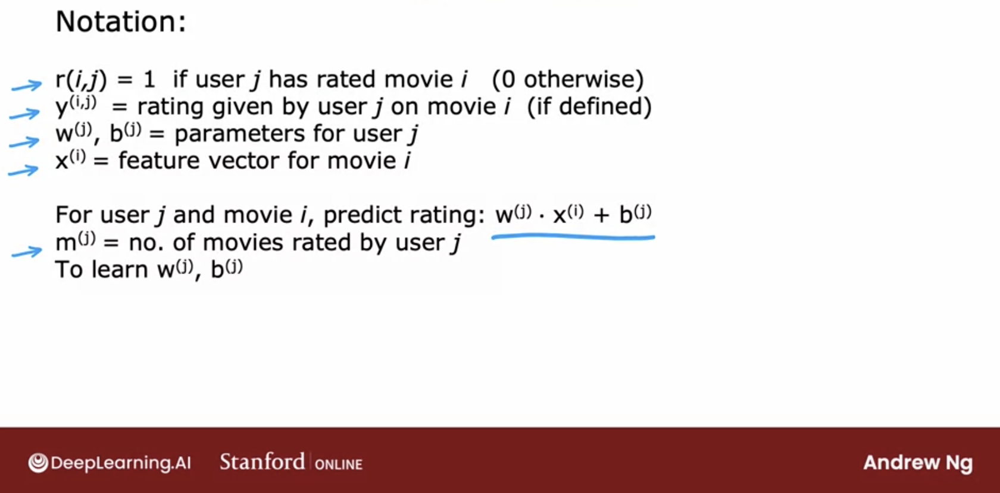
Input Features
- In recommender systems, input features play a crucial role in capturing user and item characteristics. These features are broadly categorized into dense (continuous/numerical) and sparse (categorical) types. Dense features, such as numerical ratings or timestamps, are directly input into models, while sparse features, such as categories or tags, require encoding methods like embeddings to handle their high dimensionality efficiently. By combining these feature types, models can effectively learn patterns and relationships to generate accurate predictions and recommendations.
- Sparse features can further be classified into univalent (single-value) and multivalent (multi-value) types. Univalent features represent attributes with a single value, such as a user’s primary language, while multivalent features capture sets of attributes, such as the genres of a movie or tags on a product. Appropriately encoding and embedding these feature types enables models to capture complex interactions and improve the quality of predictions and recommendations.
Sparse and Dense Features
- Recommender systems typically deal with two kinds of features: dense and sparse. Dense features are continuous real values, such as movie ratings or release years. Sparse features, on the other hand, are categorical and can vary in cardinality, like movie genres or the list of actors in a film.
- The architectural transformation of these features in RecSys models can be broadly divided into two parts:
- Dense Features (Continuous / real / numerical values):
- Movie Ratings: This feature represents the continuous real values indicating the ratings given by users to movies. For example, a rating of 4.5 out of 5 would be a dense feature value.
- Movie Release Year: This feature represents the continuous real values indicating the year in which the movie was released. For example, the release year 2000 would be a dense feature value.
- Sparse Features (Categorical with low or high cardinality):
- Movie Genre: This feature represents the categorical information about the genre(s) of a movie, such as “Action,” “Comedy,” or “Drama.” These categorical values have low cardinality, meaning there are a limited number of distinct genres.
- Movie Actors: This feature represents the categorical information about the actors who starred in a movie. These categorical values can have high cardinality, as there could be numerous distinct actors in the dataset.
- Dense Features (Continuous / real / numerical values):
- In the model architecture, the dense features like movie ratings and release year can be directly fed into a feed-forward dense neural network. The dense network performs transformations and computations on the continuous real values of these features.
- On the other hand, the sparse features like movie genre and actors require a different approach. Such features are often encoded as one-hot vectors, e.g.,
[0,1,0]; however, this often leads to excessively high-dimensional feature spaces for large vocabularies. This is especially true in the case of web-scale recommender systems such as CTR prediction, the inputs are mostly categorical features, e.g.,country = usa. Instead of directly using the raw categorical values, an embedding network is employed to reduce the dimensionality. Each of the sparse, high-dimensional categorical features are first converted into a low-dimensional, dense real-valued vector, often referred to as an embedding vector. The dimensionality of the embeddings are usually on the order of O(10) to O(100). The embedding vectors are initialized randomly and then the values are trained to minimize the final loss function during model training. The embedding network maps each sparse feature value (e.g., genre or actor) to a low-dimensional dense vector representation called an embedding. These embeddings capture the semantic relationships and similarities between different categories. The embedding lookup tables contain pre-computed embeddings for each sparse feature value, allowing for efficient retrieval during the model’s inference. - By combining the outputs of the dense neural network and the embedding lookup tables, the model can capture the interactions between dense and sparse features, leading to better recommendations based on both continuous and categorical information.
- The figure below (source) illustrates a deep neural network (DNN) architecture for processing both dense and sparse features: dense features are processed through an MLP (multi-layer perceptron) to create dense embeddings, while sparse features are converted to sparse embeddings via separate embedding tables (A and B). These embeddings are then combined to facilitate dense-sparse interactions before being fed into the DNN architecture to produce the output.

Univalent and Multivalent Features
- In recommender systems, input features often fall into two distinct categories: univalent features and multivalent features, which define the nature of the data associated with an entity (such as a user, item, or event) and how it is represented in the model. These features are essential for capturing intricate patterns in categorical data and enabling models to make powerful predictions. By appropriately encoding and embedding these features, machine learning systems can effectively leverage their information to enhance performance and deliver accurate, personalized outcomes across a wide range of applications. Understanding their usage is critical to designing robust and efficient models.
Univalent Features
- Definition:
- Univalent features are those that have a single value for each entity. These values typically represent a unique attribute or characteristic of the entity.
- Examples:
- A person’s gender.
- The primary language of a user.
- The category or type of a product.
- The current status of a user (e.g., active or inactive).
- Representation:
- Univalent features are usually represented using one-hot encoding:
- If a feature can take on \(n\) possible categorical values, it is encoded as a vector of size \(n\), where only one position (corresponding to the feature’s value) is set to “1” while the rest are “0”.
- For instance, if there are 5 possible product categories (Electronics, Furniture, Books, Clothing, Food), and a product belongs to the “Books” category, its one-hot vector would look like: \([0, 0, 1, 0, 0]\).
- This encoding is sparse but effective for capturing the uniqueness of a single value.
- Univalent features are usually represented using one-hot encoding:
Multivalent Features
- Definition:
- Multivalent features are those that have multiple values for each entity. These values represent a set of attributes or properties associated with the entity, rather than a single attribute.
- Examples:
- The categories associated with a book (e.g., “Fiction”, “Mystery”, “Bestseller”).
- The list of movies watched by a user in the past week.
- The set of tags assigned to a blog post.
- A user’s skills in a professional profile.
- Representation:
- Multivalent features are typically represented using multi-hot encoding:
- If a feature can take on \(n\) possible categorical values, it is encoded as a vector of size \(n\), where multiple positions corresponding to the feature’s values are set to “1” while the rest remain “0”.
- For example, if a user has watched movies from the genres “Action”, “Comedy”, and “Sci-Fi” out of 5 possible genres, the multi-hot vector might look like:
\([1, 1, 0, 0, 1]\).
- Like one-hot encoding, this approach results in a sparse representation but can handle sets of attributes effectively.
- Multivalent features are typically represented using multi-hot encoding:
How These Features Are Used
- Embedding Categorical Features:
- Both univalent (one-hot) and multivalent (multi-hot) features are often embedded into dense numerical vectors in a shared vector space. This process reduces the sparsity and dimensionality of the input while capturing meaningful relationships between categories.
- For instance, embeddings can learn that two languages (e.g., English and Spanish) are more closely related than others, or that certain movie genres tend to co-occur in user preferences.
- Integration with Continuous Features:
- Once embedded, these categorical features are typically combined with normalized continuous features (e.g., time since the last event, the number of interactions, or numerical ratings) to form a comprehensive input representation for the machine learning model.
Applications in Machine Learning
-
Univalent and multivalent features are widely used across domains to model complex relationships:
- Recommendation Systems:
- Univalent: The primary language of a user.
- Multivalent: A user’s previously interacted items.
- Natural Language Processing:
- Univalent: The dominant language of a document.
- Multivalent: Keywords or topics associated with a document.
- E-Commerce:
- Univalent: The category of a product.
- Multivalent: Tags or attributes describing the product (e.g., color, material, style).
- Healthcare:
- Univalent: The primary diagnosis of a patient.
- Multivalent: A set of symptoms or previous treatments.
- Recommendation Systems:
Benefits of Encoding and Representation
- One-Hot Encoding for Univalent Features:
- Simplifies feature representation for single-value attributes.
- Ensures that each possible category is uniquely represented.
- Multi-Hot Encoding for Multivalent Features:
- Allows effective modeling of sets or groups of attributes without collapsing them into a single value.
- Preserves the full scope of relevant information (e.g., all categories a user interacts with).
Challenges and Considerations
- High Dimensionality:
- Both one-hot and multi-hot encodings can result in high-dimensional sparse vectors, especially when the number of categories is large.
- Embedding Training:
- The quality of embeddings learned from categorical data can significantly impact model performance.
- Interpretability:
- While sparse representations (one-hot and multi-hot) are easy to interpret, embeddings are dense and less transparent, requiring additional techniques to understand their semantics.
Transforming Variable-Sized Sparse IDs into Fixed-Width Vectors
-
At the input stage of the recommendation model, one key challenge is the variability in size of sparse feature inputs (e.g., a list of watched videos in a video recommendation system or search tokens in an information retrieval system). These features are multivalent, meaning they contain multiple values (e.g., a user may have watched 10 videos or searched for 5 different topics). To process these multivalent sparse features efficiently in the deep learning architecture, the following steps are employed:
- Embedding Sparse Features:
- Sparse feature values, which are categorical in nature, are first mapped to dense, low-dimensional embedding vectors using embedding lookup tables. Each categorical ID (e.g., a video ID or a search term) is assigned a fixed-width embedding vector. For instance, if the embedding dimension is 128, each sparse ID is represented as a 128-dimensional dense vector.
- Averaging Embeddings:
- Since sparse feature inputs are variable-sized (e.g., a user may watch different numbers of videos), embeddings for all IDs in a single feature (e.g., all watched videos) are averaged together. This process transforms the variable-sized “bag” of sparse embeddings into a single fixed-width vector representation.
- For example, if a user has watched 5 videos, their corresponding 5 embedding vectors (each of size 128) are averaged element-wise to produce a single embedding vector of size 128. Similarly, if a user has searched for 3 topics, the embeddings for these topics are averaged to form another fixed-width vector.
- Concatenation with Other Features:
- The averaged embeddings are then concatenated with other feature types, such as dense features (e.g., user age, gender) or other sparse features (that may or may not have undergone similar transformations). This concatenated representation forms a unified, fixed-width input vector that is suitable for feeding into the neural network’s hidden layers.
- Benefits of Averaging:
- Dimensionality Reduction: Averaging condenses variable-sized inputs into a consistent format, reducing computational complexity.
- Noise Mitigation: By averaging multiple embeddings, the model can smooth out noise and capture the overall trend or preference represented by the set of sparse IDs.
- Scalability: This approach allows the model to handle a wide range of input sizes without increasing the number of parameters or computational requirements.
- Embedding Sparse Features:
-
By averaging embeddings for variable-sized sparse features, the recommendation system ensures a consistent, efficient, and scalable input representation, enabling it to handle the diverse and large-scale datasets characteristic of recommender systems.
Content-Based Filtering
- Content-based filtering is a sophisticated recommendation system that suggests items to users by analyzing the similarity between item features and the user’s known preferences. This approach recommends items that resemble those a user has previously liked or interacted with.
Mechanism of Content-Based Filtering
- Content-based filtering operates by examining the attributes or features of items, such as textual descriptions, images, or tags, and constructing a profile of the user’s preferences based on the attributes of items they have engaged with. The system then recommends items similar to those the user has previously interacted with, drawing on the similarity between the item attributes and the user’s profile.
- For example, consider a content-based filtering system designed to recommend movies. The system would analyze various attributes of the movies, such as genre, actors, directors, and plot summaries, and build a user profile based on the movies they have liked in the past. If a user has shown a preference for action movies featuring Bruce Willis, the system might recommend other action movies that also star Bruce Willis or share similar attributes.
A major difference between content-based filtering and collaborative filtering is that content-based filtering only relies on video features (while collaborative filtering relies exclusively upon users’ historical interactions to make recommendations). This enables content-based filtering to tackle the item cold-start problem effectively.
Advantages of Content-Based Filtering
-
Content-based filtering offers several advantages over alternative recommendation approaches:
- Effective in Data-Limited Environments: This method is particularly useful in situations where there is limited or no data on user behavior, such as in new or niche domains with a small user base.
- Personalized Recommendations: Since content-based filtering relies on an individual user’s preferences rather than the collective behavior of other users, it can provide highly personalized recommendations.
- Scalability: The model does not require data from other users, focusing solely on the current user’s information, which makes it easier to scale.
- Recommendation of Niche Items: It can recommend niche items tailored to each user’s unique preferences, items that might not be of interest to a broader audience.
- Ability to Recommend New Items: The method can recommend newly introduced items without waiting for user interaction data, as the recommendations are based on the item’s inherent features.
- Capturing Unique User Interests: Content-based filtering excels at capturing and catering to the distinct interests of users by recommending items based on their previous engagements.
Limitations of Content-Based Filtering
-
Despite its advantages, content-based filtering has several limitations:
- Need for Domain Knowledge: The method requires extensive domain knowledge, as features must often be manually engineered. Consequently, the effectiveness of the model is closely tied to the quality of these hand-engineered features.
- Limited Exploration of New Interests: The model tends to recommend items within the user’s existing preferences, limiting its ability to introduce new or diverse interests.
- Difficulty in Discovering New Interests: The method may struggle to identify and suggest items that do not align with the user’s current interests, making it challenging to expand the user’s horizons.
- Dependence on Feature Availability: The method may be ineffective in situations where there is a lack of detailed item information or where items possess limited attributes or features.
Types of Content-Based Filtering
-
Item-Based Filtering: In this approach, the recommender system suggests new items based on their similarity to items previously selected by the user, which are treated as implicit feedback. This method can be visualized in the diagram provided. 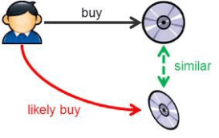
-
User-Based Filtering: This approach involves collecting user preferences through explicit feedback mechanisms, such as questionnaires. The gathered information is then used to recommend items with features similar to those of items the user has previously liked. An example is illustrated in the diagram provided. 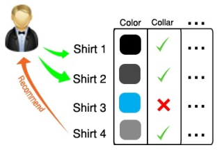
Example
-
Consider the following example, which begins by examining the features illustrated in the image below (source): 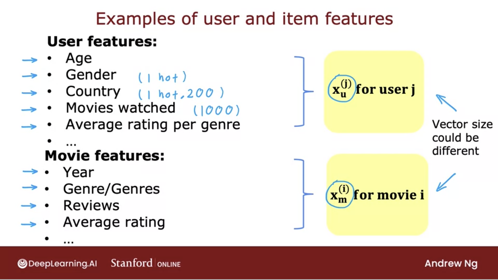
-
We aim to develop an algorithm that utilizes deep learning to effectively match users with items.
-
The architecture of our proposed model is depicted in the images below (source): 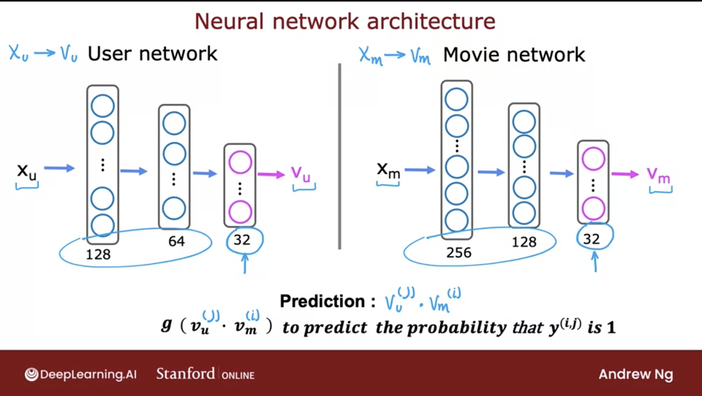 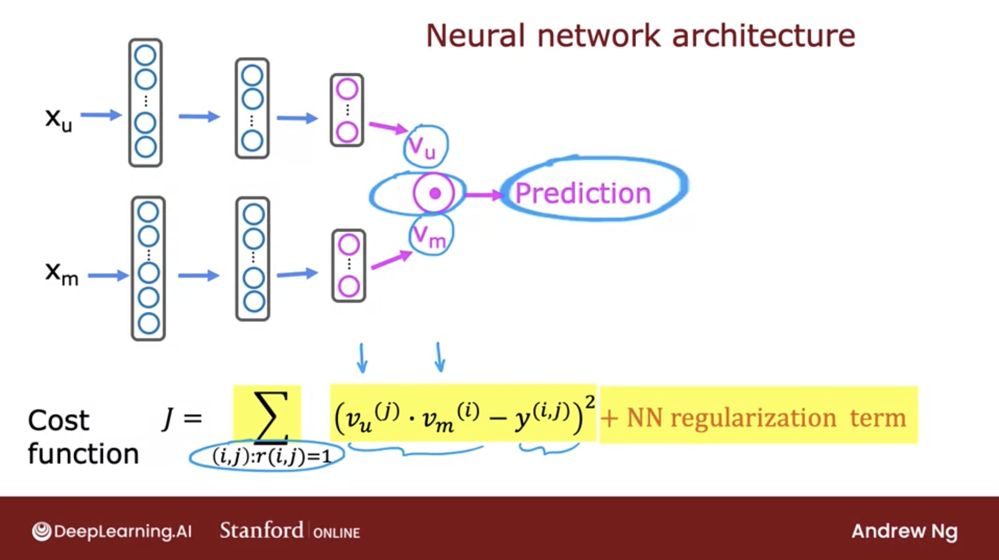
-
Next, we will examine a sequential model in TensorFlow that implements a content-based filtering approach (source):

-
This model consists of two dense hidden layers, and the final layer produces 32 output values. All layers employ the ReLU activation function.
Code deep-dive
- Now, lets build a content-based filtering system using neural networks to recommend movies. The architecture is listed below (source). 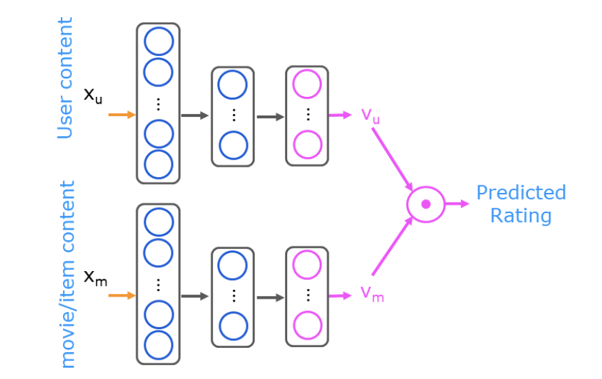
- Lets import our packages and load our dataset:
import numpy as np
import numpy.ma as ma
from numpy import genfromtxt
from collections import defaultdict
import pandas as pd
import tensorflow as tf
from tensorflow import keras
from sklearn.preprocessing import StandardScaler, MinMaxScaler
from sklearn.model_selection import train_test_split
import tabulate
from recsysNN_utils import *
pd.set_option("display.precision", 1)
# Load Data, set configuration variables
item_train, user_train, y_train, item_features, user_features, item_vecs, movie_dict, user_to_genre = load_data()
num_user_features = user_train.shape[1] - 3 # remove userid, rating count and ave rating during training
num_item_features = item_train.shape[1] - 1 # remove movie id at train time
uvs = 3 # user genre vector start
ivs = 3 # item genre vector start
u_s = 3 # start of columns to use in training, user
i_s = 1 # start of columns to use in training, items
scaledata = True # applies the standard scalar to data if true
print(f"Number of training vectors: {len(item_train)}")
- Let’s take a quick look at our feature vectors and data:
pprint_train(user_train, user_features, uvs, u_s, maxcount=5)
[user id] [rating count] [rating ave] Act ion Adve nture Anim ation Chil dren Com edy Crime Docum entary Drama Fan tasy Hor ror Mys tery Rom ance Sci -Fi Thri ller
2 16 4.1 3.9 5.0 0.0 0.0 4.0 4.2 4.0 4.0 0.0 3.0 4.0 0.0 4.2 3.9
2 16 4.1 3.9 5.0 0.0 0.0 4.0 4.2 4.0 4.0 0.0 3.0 4.0 0.0 4.2 3.9
2 16 4.1 3.9 5.0 0.0 0.0 4.0 4.2 4.0 4.0 0.0 3.0 4.0 0.0 4.2 3.9
2 16 4.1 3.9 5.0 0.0 0.0 4.0 4.2 4.0 4.0 0.0 3.0 4.0 0.0 4.2 3.9
2 16 4.1 3.9 5.0 0.0 0.0 4.0 4.2 4.0 4.0 0.0 3.0 4.0 0.0 4.2 3.9
- Let’s prepare the data by doing a bit of preprocessing:
# scale training data
if scaledata:
item_train_save = item_train
user_train_save = user_train
scalerItem = StandardScaler()
scalerItem.fit(item_train)
item_train = scalerItem.transform(item_train)
scalerUser = StandardScaler()
scalerUser.fit(user_train)
user_train = scalerUser.transform(user_train)
print(np.allclose(item_train_save, scalerItem.inverse_transform(item_train)))
print(np.allclose(user_train_save, scalerUser.inverse_transform(user_train)))
- And now split it into test and train:
item_train, item_test = train_test_split(item_train, train_size=0.80, shuffle=True, random_state=1)
user_train, user_test = train_test_split(user_train, train_size=0.80, shuffle=True, random_state=1)
y_train, y_test = train_test_split(y_train, train_size=0.80, shuffle=True, random_state=1)
print(f"movie/item training data shape: {item_train.shape}")
print(f"movie/item test data shape: {item_test.shape}")
movie/item training data shape: (46549, 17)
movie/item test data shape: (11638, 17)
- Now, let’s construct our neural network as the architecture displayed above. It will have two networks that are combined by a dot product.
# GRADED_CELL
# UNQ_C1
num_outputs = 32
tf.random.set_seed(1)
user_NN = tf.keras.models.Sequential([
tf.keras.layers.Dense(256, activation='relu'),
tf.keras.layers.Dense(128, activation='relu'),
tf.keras.layers.Dense(num_outputs),
])
item_NN = tf.keras.models.Sequential([
tf.keras.layers.Dense(256, activation='relu'),
tf.keras.layers.Dense(128, activation='relu'),
tf.keras.layers.Dense(num_outputs),
])
# create the user input and point to the base network
input_user = tf.keras.layers.Input(shape=(num_user_features))
vu = user_NN(input_user)
vu = tf.linalg.l2_normalize(vu, axis=1)
# create the item input and point to the base network
input_item = tf.keras.layers.Input(shape=(num_item_features))
vm = item_NN(input_item)
vm = tf.linalg.l2_normalize(vm, axis=1)
# compute the dot product of the two vectors vu and vm
output = tf.keras.layers.Dot(axes=1)([vu, vm])
# specify the inputs and output of the model
model = Model([input_user, input_item], output)
model.summary()
Model: "model"
__________________________________________________________________________________________________
Layer (type) Output Shape Param # Connected to
==================================================================================================
input_1 (InputLayer) [(None, 14)] 0
__________________________________________________________________________________________________
input_2 (InputLayer) [(None, 16)] 0
__________________________________________________________________________________________________
sequential (Sequential) (None, 32) 40864 input_1[0][0]
__________________________________________________________________________________________________
sequential_1 (Sequential) (None, 32) 41376 input_2[0][0]
__________________________________________________________________________________________________
tf_op_layer_l2_normalize/Square [(None, 32)] 0 sequential[0][0]
__________________________________________________________________________________________________
tf_op_layer_l2_normalize_1/Squa [(None, 32)] 0 sequential_1[0][0]
__________________________________________________________________________________________________
tf_op_layer_l2_normalize/Sum (T [(None, 1)] 0 tf_op_layer_l2_normalize/Square[0
__________________________________________________________________________________________________
tf_op_layer_l2_normalize_1/Sum [(None, 1)] 0 tf_op_layer_l2_normalize_1/Square
__________________________________________________________________________________________________
tf_op_layer_l2_normalize/Maximu [(None, 1)] 0 tf_op_layer_l2_normalize/Sum[0][0
__________________________________________________________________________________________________
tf_op_layer_l2_normalize_1/Maxi [(None, 1)] 0 tf_op_layer_l2_normalize_1/Sum[0]
__________________________________________________________________________________________________
tf_op_layer_l2_normalize/Rsqrt [(None, 1)] 0 tf_op_layer_l2_normalize/Maximum[
__________________________________________________________________________________________________
tf_op_layer_l2_normalize_1/Rsqr [(None, 1)] 0 tf_op_layer_l2_normalize_1/Maximu
__________________________________________________________________________________________________
tf_op_layer_l2_normalize (Tenso [(None, 32)] 0 sequential[0][0]
tf_op_layer_l2_normalize/Rsqrt[0]
__________________________________________________________________________________________________
tf_op_layer_l2_normalize_1 (Ten [(None, 32)] 0 sequential_1[0][0]
tf_op_layer_l2_normalize_1/Rsqrt[
__________________________________________________________________________________________________
dot (Dot) (None, 1) 0 tf_op_layer_l2_normalize[0][0]
tf_op_layer_l2_normalize_1[0][0]
==================================================================================================
Total params: 82,240
Trainable params: 82,240
Non-trainable params: 0
__________________________________________________________________________________________________
- Finally, it’s time to use a mean squared error loss and an Adam optimizer
tf.random.set_seed(1)
cost_fn = tf.keras.losses.MeanSquaredError()
opt = keras.optimizers.Adam(learning_rate=0.01)
model.compile(optimizer=opt,
loss=cost_fn)
- Let’s get to training!
tf.random.set_seed(1)
model.fit([user_train[:, u_s:], item_train[:, i_s:]], ynorm_train, epochs=30)
Train on 46549 samples
Epoch 1/30
46549/46549 [==============================] - 6s 122us/sample - loss: 0.1254
Epoch 2/30
46549/46549 [==============================] - 5s 113us/sample - loss: 0.1187
Epoch 3/30
46549/46549 [==============================] - 5s 112us/sample - loss: 0.1169
Epoch 4/30
46549/46549 [==============================] - 5s 118us/sample - loss: 0.1154
Epoch 5/30
46549/46549 [==============================] - 5s 112us/sample - loss: 0.1142
Epoch 6/30
46549/46549 [==============================] - 5s 114us/sample - loss: 0.1130
Epoch 7/30
46549/46549 [==============================] - 5s 114us/sample - loss: 0.1119
Epoch 8/30
46549/46549 [==============================] - 5s 114us/sample - loss: 0.1110
Epoch 9/30
46549/46549 [==============================] - 5s 114us/sample - loss: 0.1095
Epoch 10/30
46549/46549 [==============================] - 5s 113us/sample - loss: 0.1083
Epoch 11/30
46549/46549 [==============================] - 5s 113us/sample - loss: 0.1073
Epoch 12/30
46549/46549 [==============================] - 5s 112us/sample - loss: 0.1066
Epoch 13/30
46549/46549 [==============================] - 5s 113us/sample - loss: 0.1059
Epoch 14/30
46549/46549 [==============================] - 5s 112us/sample - loss: 0.1054
Epoch 15/30
46549/46549 [==============================] - 5s 112us/sample - loss: 0.1047
Epoch 16/30
46549/46549 [==============================] - 5s 114us/sample - loss: 0.1041
Epoch 17/30
46549/46549 [==============================] - 5s 112us/sample - loss: 0.1036
Epoch 18/30
46549/46549 [==============================] - 5s 113us/sample - loss: 0.1030
Epoch 19/30
46549/46549 [==============================] - 5s 112us/sample - loss: 0.1027
Epoch 20/30
46549/46549 [==============================] - 5s 113us/sample - loss: 0.1021
Epoch 21/30
46549/46549 [==============================] - 5s 114us/sample - loss: 0.1018
Epoch 22/30
46549/46549 [==============================] - 5s 112us/sample - loss: 0.1014
Epoch 23/30
46549/46549 [==============================] - 5s 113us/sample - loss: 0.1010
Epoch 24/30
46549/46549 [==============================] - 5s 112us/sample - loss: 0.1006
Epoch 25/30
46549/46549 [==============================] - 5s 116us/sample - loss: 0.1003
Epoch 26/30
46549/46549 [==============================] - 5s 114us/sample - loss: 0.0999
Epoch 27/30
46549/46549 [==============================] - 5s 115us/sample - loss: 0.0997
Epoch 28/30
46549/46549 [==============================] - 5s 112us/sample - loss: 0.0991
Epoch 29/30
46549/46549 [==============================] - 5s 113us/sample - loss: 0.0989
Epoch 30/30
46549/46549 [==============================] - 5s 112us/sample - loss: 0.0985
<tensorflow.python.keras.callbacks.History at 0x7fab691f12d0>
- Evaluate the model to determine the loss on the test data.
model.evaluate([user_test[:, u_s:], item_test[:, i_s:]], ynorm_test)
11638/11638 [==============================] - 0s 33us/sample - loss: 0.1045
0.10449595100221243
- Making predictions is the next step, first lets start off by predicting for a new user:
new_user_id = 5000
new_rating_ave = 1.0
new_action = 1.0
new_adventure = 1
new_animation = 1
new_childrens = 1
new_comedy = 5
new_crime = 1
new_documentary = 1
new_drama = 1
new_fantasy = 1
new_horror = 1
new_mystery = 1
new_romance = 5
new_scifi = 5
new_thriller = 1
new_rating_count = 3
user_vec = np.array([[new_user_id, new_rating_count, new_rating_ave,
new_action, new_adventure, new_animation, new_childrens,
new_comedy, new_crime, new_documentary,
new_drama, new_fantasy, new_horror, new_mystery,
new_romance, new_scifi, new_thriller]])
- Let’s look at the top-rated movies for the new user:
# generate and replicate the user vector to match the number movies in the data set.
user_vecs = gen_user_vecs(user_vec,len(item_vecs))
# scale the vectors and make predictions for all movies. Return results sorted by rating.
sorted_index, sorted_ypu, sorted_items, sorted_user = predict_uservec(user_vecs, item_vecs, model, u_s, i_s,
scaler, scalerUser, scalerItem, scaledata=scaledata)
print_pred_movies(sorted_ypu, sorted_user, sorted_items, movie_dict, maxcount = 10)
y_p movie id rating ave title genres
4.86762 64969 3.61765 Yes Man (2008) Comedy
4.86692 69122 3.63158 Hangover, The (2009) Comedy|Crime
4.86477 63131 3.625 Role Models (2008) Comedy
4.85853 60756 3.55357 Step Brothers (2008) Comedy
4.85785 68135 3.55 17 Again (2009) Comedy|Drama
4.85178 78209 3.55 Get Him to the Greek (2010) Comedy
4.85138 8622 3.48649 Fahrenheit 9/11 (2004) Documentary
4.8505 67087 3.52941 I Love You, Man (2009) Comedy
4.85043 69784 3.65 Brüno (Bruno) (2009) Comedy
4.84934 89864 3.63158 50/50 (2011) Comedy|Drama
- Now let’s make predictions for an existing user:
uid = 36
# form a set of user vectors. This is the same vector, transformed and repeated.
user_vecs, y_vecs = get_user_vecs(uid, scalerUser.inverse_transform(user_train), item_vecs, user_to_genre)
# scale the vectors and make predictions for all movies. Return results sorted by rating.
sorted_index, sorted_ypu, sorted_items, sorted_user = predict_uservec(user_vecs, item_vecs, model, u_s, i_s, scaler,
scalerUser, scalerItem, scaledata=scaledata)
sorted_y = y_vecs[sorted_index]
#print sorted predictions
print_existing_user(sorted_ypu, sorted_y.reshape(-1,1), sorted_user, sorted_items, item_features, ivs, uvs, movie_dict, maxcount = 10)
y_p y user user genre ave movie rating ave title genres
3.1 3.0 36 3.00 2.86 Time Machine, The (2002) Adventure
3.0 3.0 36 3.00 2.86 Time Machine, The (2002) Action
2.8 3.0 36 3.00 2.86 Time Machine, The (2002) Sci-Fi
2.3 1.0 36 1.00 4.00 Beautiful Mind, A (2001) Romance
2.2 1.0 36 1.50 4.00 Beautiful Mind, A (2001) Drama
1.6 1.5 36 1.75 3.52 Road to Perdition (2002) Crime
1.6 2.0 36 1.75 3.52 Gangs of New York (2002) Crime
1.5 1.5 36 1.50 3.52 Road to Perdition (2002) Drama
1.5 2.0 36 1.50 3.52 Gangs of New York (2002) Drama
Collaborative Filtering
- Collaborative filtering is a recommendation system technique used to suggest items to users based on the behaviors and preferences of a broader user group. It operates on the principle that users with similar tastes are likely to enjoy similar items.
A major difference between content-based filtering and collaborative filtering is that collaborative filtering does not use item features and relies exclusively upon users’ historical interactions to make recommendations.
- Collaborative filtering enhances recommendation systems by utilizing similarities between both users and items, enabling cross-user recommendations. This approach allows the system to recommend an item to one user based on the interests of another user with similar preferences. Unlike content-based filtering, collaborative filtering automatically learns embeddings without relying on manually engineered features.
Mechanism of Collaborative Filtering
- Collaborative filtering functions by analyzing user behavior, such as ratings, purchases, or clicks. The system identifies users with similar preferences and recommends items to an individual user based on what others with similar tastes have liked or engaged with.
Example of Collaborative Filtering
- In a movie recommendation system, collaborative filtering would analyze the ratings or reviews provided by users. If a user consistently rates certain movies highly, and those movies have also been highly rated by users with similar preferences, the system would recommend other movies that the user has not yet seen but have been positively rated by those similar users.
Objective of Collaborative Filtering
- The primary goal of a collaborative filtering system is to generate two vectors:
- User Parameter Vector: Captures the user’s tastes.
- Item Feature Vector: Represents certain characteristics or descriptions of the item.
- The system aims to predict how a user might rate an item by calculating the dot product of these two vectors, often with an added bias term. This prediction is then used to generate personalized recommendations.
Advantages of Collaborative Filtering
- Effectiveness in Sparse Data Environments: Collaborative filtering is particularly effective when there is limited information about item attributes, as it relies on user behavior rather than item features.
- Scalability: It performs well in environments with a large and diverse user base, making it suitable for systems with extensive datasets.
- Serendipitous Recommendations: The system can provide unexpected yet relevant recommendations, helping users discover items they might not have found independently.
- No Domain Knowledge Required: It does not require specific knowledge of item features, eliminating the need for domain-specific expertise in engineering these features.
- Efficiency: Collaborative filtering models are generally faster and less computationally intensive than content-based filtering, as they do not require analysis of item-specific attributes.
Disadvantages of Collaborative Filtering
- Data Scarcity: Collaborative filtering can struggle in situations where there is insufficient data on user behavior, limiting its effectiveness.
- Unique Preferences: The system may have difficulty making accurate recommendations for users with highly unique or niche preferences, as it relies on similarities between users.
- Cold Start Problem: New items or users with limited data pose challenges for generating accurate recommendations due to the lack of historical interaction data.
- Difficulty Handling Niche Interests: The approach may struggle to cater to users with highly specialized or niche interests, as it depends on finding comparable users with similar preferences.
Types of Collaborative Filtering
- User-Based Collaborative Filtering: This method focuses on identifying users with similar preferences or behaviors. The system recommends items to a user by considering the items liked or interacted with by other users who share similar tastes. It is highly personalized but may face scalability challenges as the user base grows.
- Item-Based Collaborative Filtering: This approach emphasizes the relationships between items rather than users. It recommends items to a user based on the similarity of items that the user has previously interacted with. Item-based filtering is generally more scalable and effective when dealing with large user bases, though it may be less personalized than user-based filtering.
User-based Collaborative Filtering
- User-based Collaborative Filtering is a recommendation technique that suggests items to a user based on the preferences of similar users, operating on the principle that if users have agreed on items in the past, they are likely to agree on other items in the future. This technique is powerful for generating personalized recommendations, but its effectiveness can be hampered by challenges such as scalability, sparsity, and the cold start problem. To address these issues, various optimizations and hybrid models, which combine user-based and item-based collaborative filtering, can be employed, leading to more efficient and accurate recommendation systems.
- Here’s a detailed explanation of how user-based collaborative filtering works:
Data Collection
- User-Item Interaction Matrix: The fundamental data structure in user-based collaborative filtering is the user-item interaction matrix. In this matrix:
- Rows represent users.
- Columns represent items.
- The entries in the matrix represent a user’s interaction with an item, such as a rating, purchase, click, or like.
- Example:
| User | Item A | Item B | Item C | Item D |
|---|---|---|---|---|
| $$U_1$$ | 5 | 3 | 4 | ? |
| $$U_2$$ | 4 | 1 | 5 | 2 |
| $$U_3$$ | ? | 5 | 4 | 1 |
| $$U_4$$ | 2 | 4 | ? | 5 |
- In this matrix, the question mark (
?) indicates unknown or missing ratings that the system needs to predict.
Calculate Similarity Between Users
- Purpose: To find users who have similar tastes or preferences as the active user (the user for whom we want to make recommendations).
- Methods: Common similarity measures include:
- Cosine Similarity: Measures the cosine of the angle between two user vectors (rows in the matrix).
- Pearson Correlation Coefficient: Measures the linear correlation between the users’ ratings, considering the tendency of users to rate items higher or lower overall.
- Jaccard Similarity: Measures the similarity based on the intersection over the union of the sets of items rated by both users.
- Example Calculation (Cosine Similarity):
- For two users \(U_1\) and \(U_2\), their similarity is calculated as: \(\text{Similarity}(U_1, U_2) = \frac{\sum_{i} r_{U_1,i} \times r_{U_2,i}}{\sqrt{\sum_{i} r_{U_1,i}^2} \times \sqrt{\sum_{i} r_{U_2,i}^2}}\)
- Here, \(r_{U_1,i}\) is the rating given by user \(U_1\) to item \(i\), and similarly for \(U_2\).
Identify Nearest Neighbors
- Nearest Neighbors: Once similarities are calculated, the system identifies the “nearest neighbors” to the active user. These are the users who have the highest similarity scores with the active user.
- Selecting K-Nearest Neighbors: Often, the top \(K\) users with the highest similarity scores are selected. This value of \(K\) is a parameter that can be tuned based on the performance of the recommendation system.
Generate Predictions
- Weighted Average: To predict the rating for an item that the active user has not yet rated, a weighted average of the ratings given by the nearest neighbors (“similar users”) to that item is computed. The weights are the similarity scores between the active user and the similar users/neighbors.
- Formula: \(\text{Predicted Rating for User } U \text{ on Item } I = \frac{\sum_{\text{neighbors}} \text{Similarity}(U, \text{Neighbor}) \times \text{Rating}(\text{Neighbor}, I)}{\sum_{\text{neighbors}} \text{Similarity}(U, \text{Neighbor})}\)
- Example:
- If we want to predict \(U_1\)’s rating for item \(D\), and we know \(U_2\) and \(U_3\) are \(U_1\)’s nearest neighbors, we calculate the predicted rating as a weighted sum of \(U_2\) and \(U_3\)’s ratings for item \(D\), using the similarity scores as weights.
Recommend Items
- Top-\(N\) Recommendations: After predicting the ratings for all items the active user has not interacted with, the system can recommend the top \(N\) items with the highest predicted ratings.
- These are the items that the system predicts the user will like the most based on the preferences of similar users.
Implementation Considerations
- Sparsity: The user-item matrix is often sparse, meaning most users have interacted with only a small fraction of the available items. This sparsity can make it challenging to find meaningful similarities between users.
- Cold Start Problem: New users with little interaction history can be difficult to recommend items to, as there isn’t enough data to find similar users.
- Scalability: User-based collaborative filtering can be computationally expensive as it requires calculating similarities between all pairs of users. As the number of users grows, this can become infeasible without optimizations.
Optimization Strategies
- Dimensionality Reduction: Techniques like Singular Value Decomposition (SVD) can reduce the dimensionality of the user-item matrix, making similarity calculations more efficient.
- Clustering: Users can be clustered based on their preferences, and similarities can be calculated within clusters rather than across all users.
- Incremental Updates: Instead of recalculating similarities from scratch whenever new data comes in, the system can incrementally update the similarity scores.
Advantages of User-Based collaborative filtering
- Simplicity: The approach is conceptually simple and easy to implement.
- Intuitive: Recommendations are based on actual user behavior, making the system’s choices easy to explain.
Disadvantages of User-Based collaborative filtering
- Scalability Issues: As the number of users grows, the computational cost of finding similar users increases significantly.
- Cold Start Problem: New users without much interaction history are hard to recommend items to.
- Limited Diversity: If the user base is homogenous, recommendations may lack diversity, as they are based on what similar users liked.
Example Workflow
- Suppose user \(U_1\) has watched and liked several movies. The system identifies users \(U_2\) and \(U_3\) who have similar tastes (based on their movie ratings). \(U_1\) hasn’t rated movie \(D\) yet, but \(U_2\) and \(U_3\) have rated it highly. The system predicts that \(U_1\) will also like movie \(D\) and recommends it to \(U_1\).
Item-based Collaborative Filtering
- Item-based Collaborative Filtering is a robust recommendation technique that focuses on the relationships between items rather than users. The central idea is to recommend items that are similar to the ones a user has liked or interacted with in the past, based on the assumption that if a user liked one item, they are likely to enjoy similar items. This method works by finding items that are often rated or interacted with similarly by users, making it particularly effective in scenarios where item interactions are stable and the system needs to scale to a large number of users. While it shares challenges with user-based collaborative filtering, such as sparsity and cold start problems, item-based collaborative filtering often provides more stable and scalable recommendations, especially in environments with a large user base.
- Here’s a detailed explanation of how item-based collaborative filtering works:
Data Collection
- User-Item Interaction Matrix: The starting point is the user-item interaction matrix, where:
- Rows represent users.
- Columns represent items.
- Entries in the matrix represent the interaction between users and items, such as ratings, purchases, or clicks.
- Example:
| User | Item A | Item B | Item C | Item D |
|---|---|---|---|---|
| $$U_1$$ | 5 | 3 | 4 | ? |
| $$U_2$$ | 4 | 1 | 5 | 2 |
| $$U_3$$ | 2 | 4 | 1 | 5 |
| $$U_4$$ | 3 | 5 | ? | 4 |
- In this matrix, the question mark (
?) indicates unknown or missing ratings that the system may need to predict.
Calculate Similarity Between Items
- Purpose: To identify items that are similar based on user interactions. The assumption is that items that are rated similarly by users are likely to be similar in content or appeal.
- Methods: Common similarity measures include:
- Cosine Similarity: Measures the cosine of the angle between two item vectors (columns in the matrix), which effectively compares the direction of the vectors.
- Pearson Correlation: Measures the linear correlation between two item vectors, considering the users’ rating tendencies (e.g., some users rate items more generously than others).
- Jaccard Similarity: Measures the similarity between two sets of users who have rated or interacted with both items, based on the intersection over the union of these sets.
- Example Calculation (Cosine Similarity):
- For two items \(A\) and \(B\), their similarity is calculated as: \(\text{Similarity}(A, B) = \frac{\sum_{i} r_{i,A} \times r_{i,B}}{\sqrt{\sum_{i} r_{i,A}^2} \times \sqrt{\sum_{i} r_{i,B}^2}}\)
- Here, \(r_{i,A}\) is the rating given by user \(i\) to item \(A\), and similarly for \(B\).
Build the Item-Item Similarity Matrix
- Similarity Matrix: After calculating the similarity scores for all pairs of items, an item-item similarity matrix is constructed. This matrix helps the system understand which items are similar to each other.
- Structure: In this matrix:
- Rows and columns represent items.
- The entries represent the similarity score between pairs of items.
- Example:
| Item A | Item B | Item C | Item D | |
|---|---|---|---|---|
| Item A | 1.00 | 0.92 | 0.35 | 0.45 |
| Item B | 0.92 | 1.00 | 0.20 | 0.30 |
| Item C | 0.35 | 0.20 | 1.00 | 0.85 |
| Item D | 0.45 | 0.30 | 0.85 | 1.00 |
- Here, the similarity between Item \(A\) and Item \(B\) is 0.92, indicating that they are very similar based on user ratings.
Identify Nearest Neighbors
- Rather than building an item-item similarity matrix, a more scalable implementation is to use Approximate Nearest Neighbors (ANN) to quickly identify the most similar items. ANN methods like Locality-Sensitive Hashing (LSH) or Hierarchical Navigable Small World Graphs (HNSW) can significantly reduce the computational cost while maintaining high accuracy.
- Nearest Neighbors: Once similarities are calculated, the system identifies the “nearest neighbors” to the target item. These are the items that have the highest similarity scores with the active item.
- Selecting K-Nearest Neighbors: The top \(K\) items with the highest similarity scores are selected. This value of \(K\) is a parameter that can be tuned based on the performance of the recommendation system.
Generate Predictions
- Prediction Process: To predict a user’s rating or interest in an item they haven’t interacted with yet, the system uses the user’s ratings of similar items. The idea is to give more weight to items that are more similar to the target item.
- Weighted Average: The predicted rating for an item is calculated as a weighted average of the user’s ratings for similar items, with the weights being the similarity scores.
- Formula: \(\text{Predicted Rating for User } U \text{ on Item } I = \frac{\sum_{\text{similar items } J} \text{Similarity}(I, J) \times \text{Rating}(U, J)}{\sum_{\text{similar items } J} \text{Similarity}(I, J)}\)
- Example:
- Suppose we want to predict \(U_1\)’s rating for Item \(D\). If Items \(A\) and \(C\) are similar to Item \(D\) and \(U_1\) has already rated them, the predicted rating for Item \(D\) would be a weighted average of \(U_1\)’s ratings for Items \(A\) and \(C\), weighted by their similarity to Item \(D\).
Recommend Items
- Top-\(N\) Recommendations: After predicting the ratings for all items that the user hasn’t interacted with, the system can recommend the top \(N\) items with the highest predicted ratings.
- Filtering: The system typically filters out items that the user has already rated or interacted with to ensure that only new items are recommended.
Implementation Considerations
- Sparsity: Similar to user-based collaborative filtering, the user-item matrix in item-based collaborative filtering is often sparse. However, since item similarities are typically more stable and less sensitive to new data than user similarities, item-based collaborative filtering can handle sparsity better.
- Scalability: Item-based collaborative filtering is generally more scalable than user-based collaborative filtering because the number of items is often smaller than the number of users, making the item-item similarity matrix easier to compute and store.
- Cold Start Problem: New items with little interaction data may not be effectively recommended because their similarities with other items cannot be accurately calculated.
Optimization Strategies
- Precomputing Similarities: Item-item similarities can be precomputed and stored, allowing for fast retrieval during recommendation generation.
- Clustering: Items can be clustered based on their similarities, and recommendations can be made within clusters, reducing the computational load.
- Dimensionality Reduction: Techniques like Singular Value Decomposition (SVD) can reduce the dimensionality of the item space, making similarity computations more efficient.
Advantages of Item-Based collaborative filtering
- Scalability: More scalable than user-based collaborative filtering, especially in environments with a large number of users.
- Stability: Item similarities are generally more stable over time than user similarities, leading to more consistent recommendations.
- Better Performance with Sparse Data: Performs better than user-based collaborative filtering when the user-item matrix is sparse.
Disadvantages of Item-Based collaborative filtering
- Cold Start Problem: Less effective for recommending new items that have few interactions.
- Limited Discovery: May limit users to items similar to what they have already interacted with, reducing the diversity of recommendations.
Example Workflow
- Suppose \(U_1\) has rated items \(A\) and \(B\) highly. The system identifies items \(C\) and \(D\) as similar to \(A\) and \(B\) based on other users’ ratings. It then predicts \(U_1\)’s potential ratings for items \(C\) and \(D\), and if the predicted rating for item \(D\) is high, it recommends item \(D\) to \(U_1\).
A Movie Recommendation Case-study
-
Consider a movie recommendation system, as described in Google’s course on Recommendation Systems, where the training data comprises a feedback matrix structured as follows:
- Each row corresponds to a user.
- Each column corresponds to an item, in this case, a movie.
-
The feedback regarding movies is categorized into two types:
- Explicit Feedback: Users explicitly rate a movie by assigning it a numerical value, indicating how much they liked it.
- Implicit Feedback: The system infers a user’s interest in a movie based on their viewing behavior.
- For the sake of simplicity, we will assume that the feedback matrix is binary, where a value of 1 denotes interest in the movie.
-
When a user accesses the homepage, the system should recommend movies based on the following criteria:
- The similarity of the recommended movies to those the user has previously enjoyed.
- Movies that have been favored by users with similar preferences.
- For illustrative purposes, we will manually engineer some features for the movies described in the table (source) below:

1D Embedding
- Suppose we assign to each movie a scalar in
[-1, 1]that describes whether the movie is for children (negative values) or adults (positive values). Suppose we also assign a scalar to each user in[-1, 1]that describes the user’s interest in children’s movies (closer to -1) or adult movies (closer to +1). The product of the movie embedding and the user embedding should be higher (closer to 1) for movies that we expect the user to like. (source for image below)
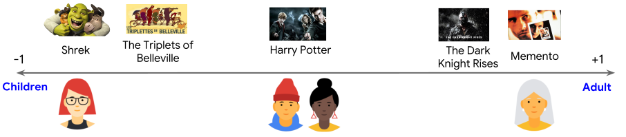
- In the diagram below (source), each checkmark identifies a movie that a particular user watched. The third and fourth users have preferences that are well explained by this feature—the third user prefers movies for children and the fourth user prefers movies for adults. However, the first and second users’ preferences are not well explained by this single feature.

2D Embedding
- One feature was not enough to explain the preferences of all users. To overcome this problem, let’s add a second feature: the degree to which each movie is a blockbuster or an art-house movie. With a second feature, we can now represent each movie with the following two-dimensional embedding (image source).
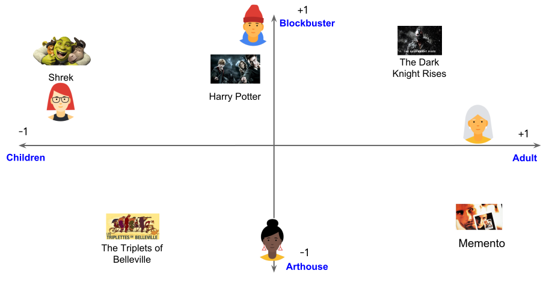
- We again place our users in the same embedding space to best explain the feedback matrix: for each \((user, item)\) pair, we would like the dot product of the user embedding and the item embedding to be close to 1 when the user watched the movie, and to 0 otherwise.
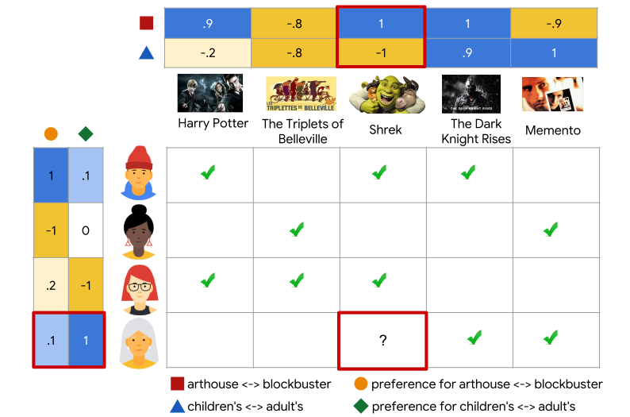
-
Note: We represented both items and users in the same embedding space. This may seem surprising. After all, users and items are two different entities. However, you can think of the embedding space as an abstract representation common to both items and users, in which we can measure similarity or relevance using a similarity metric. In this example, we hand-engineered the embeddings. In practice, the embeddings can be learned automatically, which is the power of collaborative filtering models. In the next two sections, we will discuss different models to learn these embeddings, and how to train them.
-
The collaborative nature of this approach is apparent when the model learns the embeddings. Suppose the embedding vectors for the movies are fixed. Then, the model can learn an embedding vector for the users to best explain their preferences. Consequently, embeddings of users with similar preferences will be close together. Similarly, if the embeddings for the users are fixed, then we can learn movie embeddings to best explain the feedback matrix. As a result, embeddings of movies liked by similar users will be close in the embedding space.
Examples
- As a real-world example, let’s look at an example (source) with binary labels signifying engagement (using favorites, likes, and clicks):
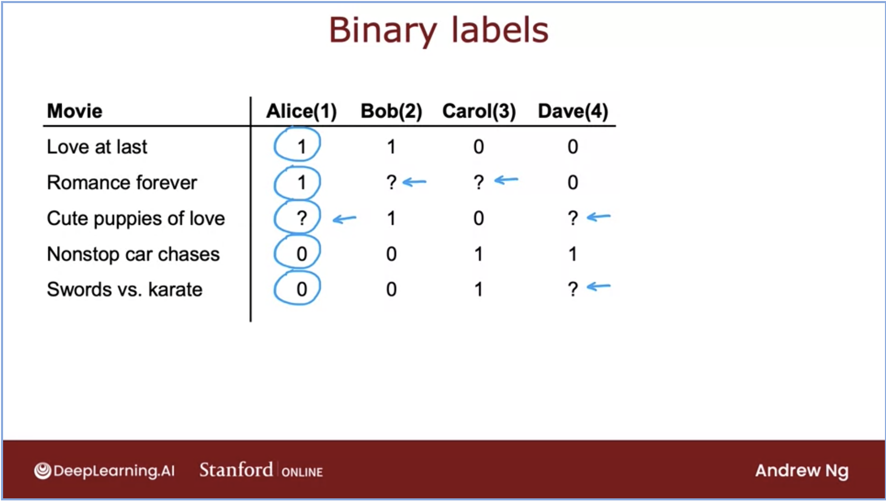
- Let’s talk about the meaning of each rating in the above dataset. We can choose what each of our labels mean so here, we have chosen the following:
1: user was engaged after being shown the item.0: user did not engage after being shown the item.?: the item is not yet shown to the user.
Matrix Factorization (MF)
- Matrix Factorization (MF) is a simple embedding model. The algorithm performs a decomposition of the (sparse) user-item feedback matrix into the product of two (dense) lower-dimensional matrices. One matrix represents the user embeddings, while the other represents the item embeddings. In essence, the model learns to map each user to an embedding vector and similarly maps each item to an embedding vector, such that the distance between these vectors reflects their relevance.
- Formally, given a feedback matrix \(\mathrm{A} \in R^{m \times n}\), where \(m\) is the number of users (or queries) and \(n\) is the number of items, the model learns:
- A user embedding matrix \(U \in \mathbb{R}^{m \times d}\), where row \(i\) is the embedding for user \(i\).
- An item embedding matrix \(V \in \mathbb{R}^{n \times d}\), where row \(j\) is the embedding for item \(j\). The image below depicts this (source):

- The embeddings are learned such that the product \(U V^{T}\) is a good approximation of the feedback matrix. Observe that the \((i, j)\) entry of \(U \cdot V^{T}\) is simply the dot product \(\left\langle U_{i}, V_{j}\right\rangle\) of the embeddings of user \(i\) and item \(j\), which you want to be close to \(A_{i, j}\).
Training Matrix Factorization
- As part of training, we aim to produce user and item embedding matrices so that their product is a good approximation of the feedback matrix. The figure below (source) illustrates this concept:
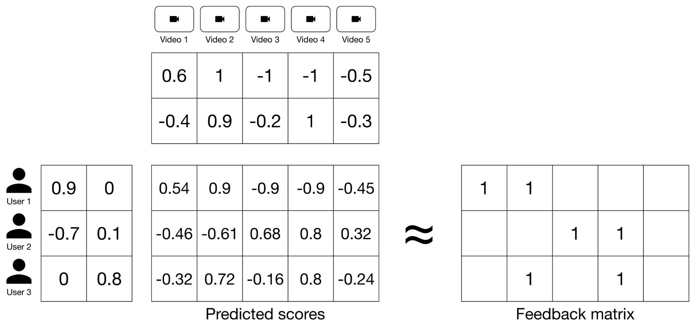
-
To achieve this, MF first randomly initializes the user and item embedding matrices, then iteratively optimizes the embeddings to decrease the loss between the Predicted Scores Matrix and the Feedback Matrix.
-
The key to successful training lies in choosing the right loss function. During training, the algorithm minimizes the difference between the predicted scores (i.e., the dot product of the user and item embeddings) and the actual feedback values. Let’s explore a few loss function options:
Squared Distance over Observed User-Item Pairs
- One intuitive loss function is to minimize the squared distance over the observed \(\langle \text{user}, \text{item} \rangle\) pairs. This loss function measures the sum of the squared distances between the predicted and actual feedback values over all pairs of observed (non-zero values) entries in the feedback matrix. This approach focuses solely on the known interactions between users and items, which are the non-zero entries in the feedback matrix.
- This concept is depicted in the figure below (source):
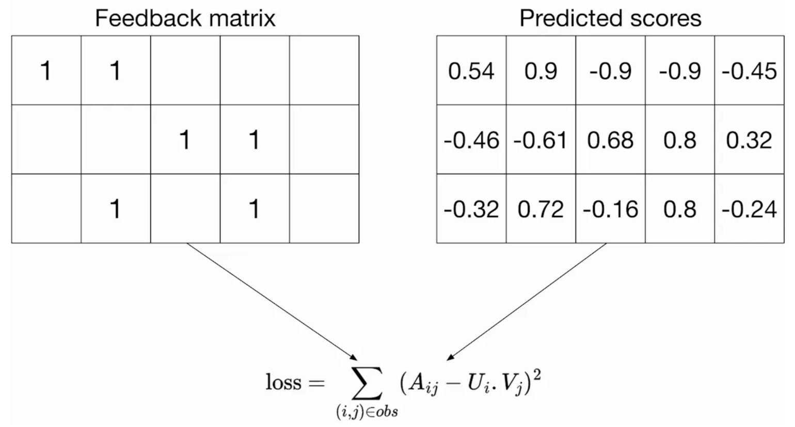
-
The loss function is defined as:
\[\min _{U \in \mathbb{R}^{m \times d}, V \in \mathbb{R}^{n \times d}} \sum_{(i, j) \in \mathrm{obs}}\left(A_{i j}-\left\langle U_{i}, V_{j}\right\rangle\right)^{2}\]- where, \(A_{ij}\) refers to the entry at row \(i\) and column \(j\) in the feedback matrix (representing the interaction between user \(i\) and item \(j\)), \(U_i\) is the embedding of user \(i\), and \(V_j\) is the embedding of item \(j\). The summation is performed only over the observed pairs. This method ensures that the model optimizes the predictions for pairs that we have data for, rather than attempting to account for unobserved pairs, which might represent irrelevant content or interactions that never occurred.
The Concept of Fold-In
-
A unique aspect of MF is the concept of fold-in, which is employed during inference when the system encounters new users or items that were not part of the training data.
- What is Fold-In?
- Fold-in is the process of incorporating a new user or item into the factorization framework without retraining the entire model. Instead of learning all embeddings from scratch, the existing item embeddings \(V\) (which are precomputed during training) are held fixed, and only the embedding for the new user (or item) is optimized.
- How Does Fold-In Work?
- For a new user, the algorithm initializes their embedding vector randomly and optimizes it iteratively to minimize the loss between their known interactions (with items) and the predictions made by the model using the fixed item embeddings. Similarly, for a new item, the user embeddings are fixed, and the new item’s embedding is adjusted.
- This enables the system to adapt to new data in a computationally efficient manner, making fold-in a critical feature for scalable recommendation systems.
Loss Function Options and Issues with Unobserved Pairs
- However, as discussed earlier, only summing over observed pairs leads to poor embeddings because the loss function doesn’t penalize the model for bad predictions on unobserved pairs. For instance, a matrix of all ones would have zero loss on the training data, but those embeddings would perform poorly on unseen \(\langle \text{user}, \text{item} \rangle\) pairs. This is because a model that doesn’t account for unobserved interactions may struggle to generalize effectively beyond the training data.
- Additionally, unobserved pairs can often act as “soft negatives” rather than strict negative data points. These soft negatives arise when a user doesn’t interact with a particular item. This lack of interaction doesn’t necessarily mean that the user dislikes the content—it could simply indicate that they haven’t encountered it yet. Therefore, treating all unobserved pairs as strictly negative can distort the model’s predictions.
Squared Distance over Both Observed and Unobserved Pairs
-
One solution is to use a loss function that considers both observed and unobserved pairs. For example, by treating unobserved pairs as negative data points and assigning them a zero value in the feedback matrix, we can minimize the squared Frobenius distance between the actual feedback matrix and the predicted matrix, which is the product of the embeddings:
\[\min _{U \in \mathbb{R}^{m \times d}, V \in \mathbb{R}^{n \times d}}\left\|A-U V^{T}\right\|_{F}^{2}\] -
In the above formula, the squared Frobenius norm measures the overall difference between the actual feedback matrix \(A\) and its approximation \(U V^{T}\) across all entries, whether observed or unobserved. The figure below (source) shows this loss function, which computes the sum of squared distances over all entries, both observed and unobserved.
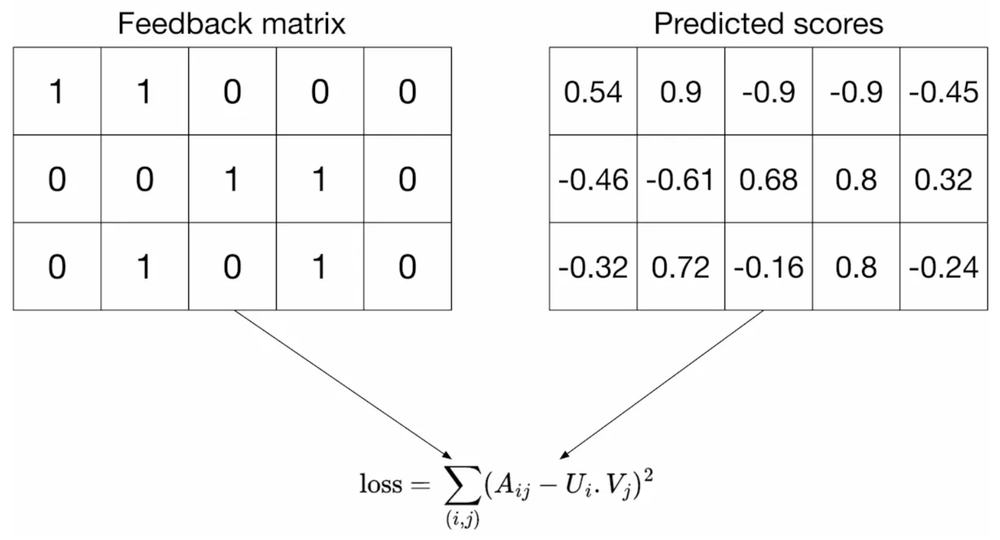
- While this addresses the problem of unobserved pairs by penalizing bad predictions, it introduces a new challenge. Because the feedback matrix is usually sparse, unobserved pairs dominate the observed ones, leading to predictions that are mostly close to zero and, thus, poor generalization performance.
A Weighted Combination of Losses for Observed and Unobserved Pairs
-
A more balanced approach is to use a weighted combination of squared distances for both observed and unobserved pairs. This method combines the advantages of both approaches. The first summation calculates the loss for observed pairs, while the second summation accounts for unobserved pairs, treating them as soft negatives. As shown in the figure below (source), the loss function is weighted by a hyperparameter \(w_0\) that ensures one term doesn’t dominate the other:
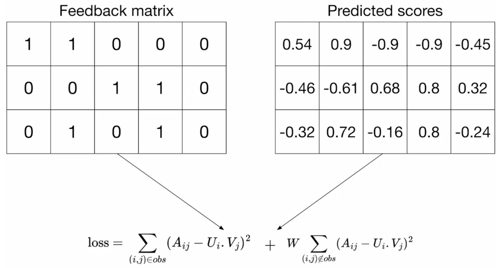
\[\min _{U \in \mathbb{R}^{m \times d}, V \in \mathbb{R}^{n \times d}} \sum_{(i, j) \in \mathrm{obs}}\left(A_{i j}-\left\langle U_{i}, V_{j}\right\rangle\right)^{2}+w_{0} \sum_{(i, j) \notin \mathrm{obs}}\left\langle U_{i}, V_{j}\right\rangle^{2}\]- The first term in the equation represents the loss over observed pairs, where \(A_{ij}\) is the actual feedback for the pair \(\langle \text{user} i, \text{item} j \rangle\), and \(\left\langle U_{i}, V_{j}\right\rangle\) is the predicted interaction score based on the embeddings. The second term applies to unobserved pairs, which are treated as soft negatives. Here, \(w_0\) is the hyperparameter that controls the weight of the unobserved pairs’ contribution to the loss function. By carefully tuning \(w_0\), this loss function effectively balances the contributions of observed and unobserved pairs, leading to better generalization performance on unseen \(\langle \text{user}, \text{item} \rangle\) pairs.
-
This approach has proven successful in practice for recommendation systems, ensuring that both types of pairs—observed and unobserved—are taken into account during training without one set dominating the other.
Practical Considerations for Weighting Observed Pairs
-
In practical applications, you also need to weight the observed pairs carefully. For example, frequent items (such as extremely popular YouTube items) or frequent queries (from heavy users) may dominate the objective function. To correct for this effect, training examples can be weighted to account for item frequency. This modifies the objective function as follows:
\[\sum_{(i, j) \in \mathrm{obs}} w_{i, j}\left(A_{i, j}-\left\langle U_{i}, V_{j}\right\rangle\right)^{2}+w_{0} \sum_{(i, j) \notin \mathrm{obs}}\left\langle U_{i}, V_{j}\right\rangle^{2}\]- In this equation, \(w_{i, j}\) represents the weight assigned to the observed pair \(\langle i, j \rangle\), which could be a function of the frequency of query \(i\) and item \(j\). By weighting frequent items or users differently, the model can avoid being overly influenced by these frequent interactions, ensuring better generalization across all users and items.
Minimizing the Objective Function
- Common methods to minimize this objective function include Stochastic Gradient Descent (SGD) and Weighted Alternating Least Squares (WALS).
Stochastic Gradient Descent (SGD)
-
Stochastic Gradient Descent (SGD) is a general-purpose optimization algorithm widely used to minimize loss functions in machine learning and deep learning. It operates by iteratively updating the model parameters in the opposite direction of the gradient of the loss function with respect to the parameters, thereby carrying out gradient descent. Unlike traditional gradient descent, which computes gradients using the entire dataset, SGD approximates this by using a randomly selected subset (often a single sample or a small batch) at each iteration. This approximation allows SGD to converge faster, especially for large-scale datasets, although it introduces some variance in the updates.
- Steps in SGD:
- Compute Gradient: For each iteration, SGD calculates the gradient of the loss function with respect to the parameters based on a randomly chosen subset of the data.
- Parameter Update: Parameters are updated by moving in the direction opposite to the gradient by a small step size, also known as the learning rate.
- Repeat: This process continues until convergence or for a predefined number of iterations.
- Advantages of SGD:
- Efficiency on Large Datasets: Since it operates on a small subset of data per iteration, SGD is well-suited for large datasets.
- Fast Convergence: With appropriate learning rate tuning, SGD often converges more quickly than traditional gradient descent.
- Generalization: The noise introduced by updating based on a subset of data can help prevent overfitting, potentially improving model generalization.
Weighted Alternating Least Squares (WALS)
- Weighted Alternating Least Squares (WALS) is an efficient algorithm that is particularly well-suited for MF, since it effectively deals with large, sparse matrices common in recommendation systems. WALS can be distributed across multiple nodes, making it efficient for large-scale data.
-
In WALS, the loss function is quadratic in each of the two embedding user and item matrices, i.e., \(U\) and \(V\). WALS performs MF in an alternating fashion: it iteratively fixes one of the two embedding matrices (such as user or item embeddings) and solves a least squares optimization problem for the other. This alternating approach is repeated until convergence, enabling WALS to handle weighted MF objectives.
- Optimization Process in WALS:
- Fix One Matrix: Start by fixing one matrix, say the user matrix, and then optimize the other matrix (e.g., the item matrix). Put simply, WALS works by alternating between fixing one matrix and optimizing the other:
- Fix \(U\) and solve (i.e., optimize) for \(V\).
- Fix \(V\) and solve (i.e., optimize) for \(U\).
- Alternate: After solving for the item matrix, fix it and solve for the user matrix.
- Iterate Until Convergence: Continue alternating between the two matrices until the objective function converges. Each step can be solved exactly by solving a linear system, leading to efficient convergence.
- Fix One Matrix: Start by fixing one matrix, say the user matrix, and then optimize the other matrix (e.g., the item matrix). Put simply, WALS works by alternating between fixing one matrix and optimizing the other:
- Benefits of WALS:
- Weighted Regularization: WALS is designed to handle weighted data, allowing it to apply different weights to observed and unobserved entries, which is crucial for balancing frequent and infrequent interactions in recommendation systems.
- Scalability: The algorithm can be distributed across multiple nodes, making it suitable for large-scale data.
- Tunable Hyperparameter: The weight for unobserved pairs, often denoted by the hyperparameter \(w_0\), is adjustable in WALS, providing flexibility in fine-tuning model performance based on specific dataset characteristics.
SGD vs. WALS
- SGD and WALS have advantages and disadvantages. Review the information below to see how they compare:
SGD
- (+) Very flexible—can use other loss functions.
- (+) Can be parallelized.
- (-) Slower—does not converge as quickly.
- (-) Harder to handle the unobserved entries (need to use negative sampling or gravity).
WALS
- (-) Reliant on Loss Squares only.
- (+) Can be parallelized.
- (+) Converges faster than SGD.
- (+) Easier to handle unobserved entries.
Cost Function for Binary Labels (Regression to Classification)
-
The MF algorithm can be generalized to handle binary labels, where the task is to predict whether a user will interact with a particular item (e.g., click or not click). In this case, the problem transitions from a regression task to a binary classification task. The following image represents the cost function for binary applications (source):
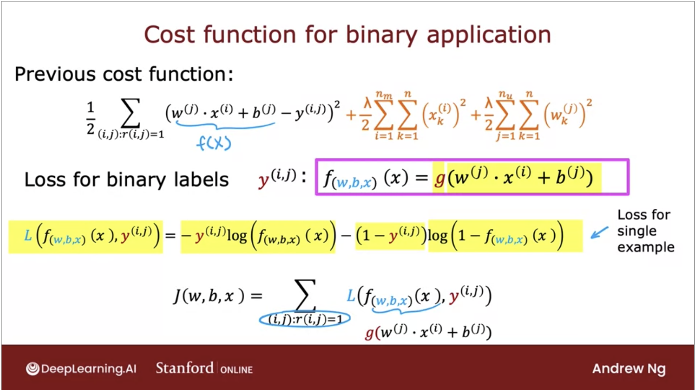
-
By adapting the linear regression-like collaborative filtering algorithm to predict binary labels, we move from regression-based recommendations to handling classification tasks, making the approach suitable for binary interaction prediction.
Example: Learning Process for Embedding Vectors
- The process of learning vectors in MF elegantly combines user preferences and item characteristics into a shared embedding space. By optimizing the embeddings to minimize prediction errors for observed interactions, the system generalizes to predict unseen interactions effectively. This approach forms the backbone of many modern recommendation systems.
- The learning process for embedding vectors in MF is illustrated in the diagram below, which provides a structured view of how embeddings are trained and utilized in a collaborative filtering framework (source).
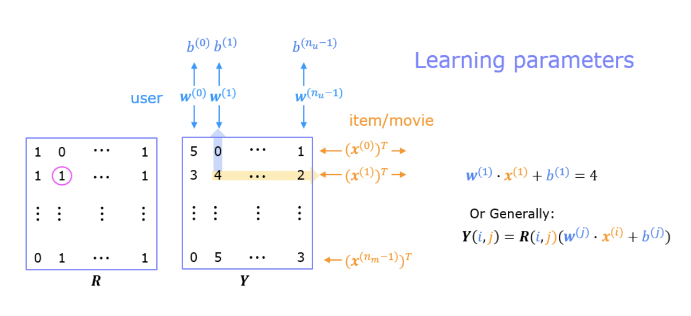
Components of the System
- Feedback Matrix (\(Y\)):
- Represents user-item interactions, where entries range from 0.5 to 5 (inclusive, in 0.5 increments) for rated items.
- Unrated items are represented with a value of 0.
- Mask Matrix (\(R\)):
- A binary matrix with a value of 1 at positions corresponding to rated items in the feedback matrix (\(Y\)).
- Unrated items are represented by a value of 0, distinguishing observed entries from missing data.
- Embedding Vectors and Biases:
- User Parameters (\(w_{user}\) and bias): Each user is associated with an embedding vector \(w_{user}\) and a bias term that reflect their preferences.
- Item Features (\(x_{movie}\)): Each item (e.g., a movie) is represented by a feature vector \(x_{movie}\), capturing its characteristics.
Training Process
-
The embedding vectors and biases are learned simultaneously through optimization using the observed entries in the feedback matrix (\(Y\)) as training data. The goal is to find user and item vectors that best explain the observed interactions while generalizing well to unobserved interactions.
- Objective Function:
- The embeddings are trained to minimize a loss function that measures the discrepancy between predicted ratings and actual ratings in the feedback matrix (\(Y\)), using the mask matrix (\(R\)) to focus on observed entries.
- Collaborative Filtering in Action:
- Each user vector \(w_{user}\) must be optimized to predict accurate ratings for all items the user has interacted with.
- Similarly, each item vector \(x_{movie}\) must predict ratings accurately across all users who have rated the item.
- The iterative optimization process ensures that all users “collaborate” to learn a shared representation of items, and vice versa, which is why this approach is termed collaborative filtering.
Example of a Training Instance
- For a given user-item pair:
- The predicted rating is computed as the dot product of the user vector and the item vector, adjusted by the bias term: \(w_{user}^{(1)} \cdot x_{movie}^{(1)} + b_{user}^{(1)} = 4\)
- Here, the system adjusts the vectors and bias so that the predicted score matches the actual rating in \(Y\).
Prediction Phase
- Once the embedding vectors and biases are learned, they can be used to predict ratings for unrated items. For example:
- Given a user’s vector \(w_{user}\) and a new item’s vector \(x_{movie}\), the predicted rating is calculated as: \(\hat{y}_{ij} = w_{user} \cdot x_{movie} + b_{user}\)
- This enables personalized recommendations, as the predicted rating reflects how likely a user is to interact with an unrated item based on learned embeddings.
Non-Negative Matrix Factorization (NMF)
Overview
- Non-Negative Matrix Factorization (NMF) imposes a non-negativity constraint on the factorized matrices. This makes it particularly suitable for domains where the data and relationships are inherently non-negative (e.g., word frequencies, item ratings).
Methodology
- NMF factorizes a given matrix \(R\) into two non-negative matrices \(U\) and \(V\):
\(R \approx U \cdot V^T\)
where:
- \(U\) (\(m \times k\)): Matrix representing \(m\) users in a \(k\)-dimensional latent space.
- \(V\) (\(n \times k\)): Matrix representing \(n\) items in the same \(k\)-dimensional latent space.
-
Non-negativity constraint: \(U \geq 0, \quad V \geq 0\)
- Optimization is performed using specialized algorithms (e.g., multiplicative updates) that ensure non-negativity.
Advantages
- Interpretability:
- Factors represent additive components, making results more intuitive (e.g., strengths of features, probabilities).
- Alignment with Non-Negative Data:
- Suitable for sparse datasets like term-document matrices or user-item ratings.
Applications
- Topic modeling (e.g., latent semantic analysis in text data).
- Image decomposition (e.g., separating illumination and reflectance).
- Recommendation systems where interpretability is crucial.
Asymmetric Matrix Factorization (AMF)
Overview
- Asymmetric Matrix Factorization (AMF) is a variant of matrix factorization designed to simplify user embedding computation and eliminate the need for additional optimization (fold-in) during inference. Instead of learning explicit user embeddings, AMF derives them dynamically from item embeddings, enabling faster and more flexible recommendations.
Methodology
- AMF learns two matrices:
- Item Embedding Matrix (Encoder): Represents items in a latent space.
- Item Reconstruction Matrix (Decoder): Reconstructs user-item interactions from the latent representation.
- User embeddings are computed dynamically as the average of the embeddings of items a user interacts with:
\(u_i = \frac{1}{|I_u|} \sum_{j \in I_u} v_j\)
- where:
- \(u_i\): Embedding of user \(i\),
- \(I_u\): Set of items interacted with by user \(i\),
- \(v_j\): Embedding of item \(j\) from the encoder.
- where:
- The recommendation task involves reconstructing the user-item matrix using the decoder.
Advantages
-
Amortized Inference: User embeddings are computed on-the-fly, eliminating the need for iterative optimization during updates (fold-in).
-
Simplified User Representation: User embeddings are not explicitly parameterized, reducing model complexity.
-
Scalability: Faster recommendations for new users or new data due to dynamic embedding computation.
Applications
- Collaborative filtering in recommendation systems.
- Scenarios requiring efficient handling of new users or streaming data.
SVD++
- SVD++ is an enhancement of standard matrix factorization techniques designed for collaborative filtering in recommender systems. While standard matrix factorization relies on explicit user-item interactions (e.g., ratings), SVD++ also incorporates implicit feedback (e.g., which items a user has interacted with but not rated), leading to improved prediction accuracy. The model effectively integrates the strengths of standard MF and AMF, making it robust and versatile.
Matrix Factorization Recap
-
Standard matrix factorization decomposes the user-item interaction matrix \(R\) into two lower-dimensional matrices:
\[R \approx P \cdot Q^T\]- where:
- \(P\) represents user latent features,
- \(Q\) represents item latent features.
- where:
-
For prediction, the rating \(r_{ui}\) for user \(u\) and item \(i\) is approximated as:
\[\hat{r}_{ui} = b_{ui} + p_u^T q_i\]- where \(b_{ui}\) accounts for baseline user and item biases.
The SVD++ Model
-
SVD++ builds upon the standard MF model by incorporating implicit feedback, represented as items the user has interacted with (e.g., viewed, purchased, clicked). The prediction formula becomes:
\[\hat{r}_{ui} = b_{ui} + q_i^T \left( p_u + |N(u)|^{-\frac{1}{2}} \sum_{j \in N(u)} y_j \right)\]- where:
- \(b_{ui}\): Baseline bias,
- \(q_i\): Latent factors of item \(i\),
- \(p_u\): Latent factors of user \(u\),
- \(y_j\): Latent representation of item \(j\) interacted with by \(u\) (implicit feedback),
- \(N(u)\): Set of items implicitly interacted with by user \(u\).
- where:
Baseline Bias
-
The baseline bias \(b_{ui}\) captures general trends, such as certain items being popular or users having tendencies to give higher ratings:
\[b_{ui} = \mu + b_u + b_i\]- where:
- \(\mu\): Global average rating,
- \(b_u, b_i\): Deviations for user \(u\) and item \(i\), respectively.
- where:
Implicit Feedback Integration
- SVD++ augments user profiles by averaging the latent factors of all implicitly interacted items. This adjustment reflects user preferences more comprehensively than explicit feedback alone.
How SVD++ Combines MF and Asymmetric MF
- Standard MF Contribution: SVD++ uses the latent factors \(p_u\) and \(q_i\), following traditional MF.
-
Asymmetric MF Contribution: Instead of exclusively modeling users through \(p_u\), SVD++ incorporates a representation derived from the user’s implicit interactions: \(\text{Implicit Profile of User: } |N(u)|^{-\frac{1}{2}} \sum_{j \in N(u)} y_j\)
- By merging these approaches, SVD++ enhances the predictive power and addresses data sparsity, especially for users with limited explicit feedback.
Advantages and Limitations of SVD++
Advantages
- Improved Accuracy: Leverages both explicit and implicit feedback.
- Data Sparsity Mitigation: Utilizes implicit interactions to enhance predictions for users with limited explicit feedback.
- Versatility: Combines the strengths of both symmetric (MF) and asymmetric models.
Limitations
- Increased Complexity: Requires more computational resources compared to standard MF.
- Explainability: While better than standard MF, less interpretable than pure asymmetric models or neighborhood-based methods.
Applications
- SVD++ is widely used in real-world recommender systems, including:
- E-commerce: Amazon, eBay for personalized product recommendations.
- Entertainment: Netflix, Spotify for movie and music recommendations.
- Content Platforms: YouTube for video suggestions.
- SVD++ is particularly effective for systems where implicit feedback is abundant and explicit feedback is sparse.
Comparative Analysis: Standard MF, Non-Negative MF, Asymmetric MF, and SVD++
- Standard MF offers flexibility and generality but requires fold-in for new users and lacks interpretability in some cases.
- NMF introduces a non-negativity constraint, improving interpretability and aligning with real-world non-negative data constraints.
- AMF simplifies user embedding computation, making it suitable for real-time applications where efficiency is key.
- SVD++ enhances standard MF by incorporating implicit feedback, achieving high accuracy and handling data sparsity effectively.
| Feature | Standard MF | Non-Negative MF | Asymmetric MF | SVD++ |
|---|---|---|---|---|
| Objective | Learn separate user and item embeddings. | Learn non-negative user and item embeddings. | Learn item embeddings; compute user embeddings dynamically. | Learn user and item embeddings, incorporating implicit feedback. |
| User Embedding | Explicitly parameterized and learned. | Explicitly parameterized and learned, constrained to non-negative values. | Not explicitly parameterized; derived from item embeddings. | Explicitly parameterized and augmented with implicit feedback. |
| Item Embedding | Explicitly parameterized and learned. | Explicitly parameterized and learned, constrained to non-negative values. | Explicitly parameterized and learned. | Explicitly parameterized and learned. |
| Inference for New Users | Requires optimization (fold-in). | Requires optimization (fold-in). | No optimization needed; dynamic computation. | Seamless handling via implicit feedback. |
| Constraint | No constraints on \(U\) and \(V\). | Non-negativity constraint on \(U\) and \(V\). | No constraints on \(V\) (item embeddings). | No constraints; uses additional implicit interaction terms. |
| Implicit Feedback | Not used. | Not used. | Not used. | Incorporated effectively into user embeddings. |
| Interpretability | Less interpretable (can include negative values). | Highly interpretable (factors are additive and non-negative). | Moderate (user embeddings represent item averages). | Moderate; interpretable through user interactions. |
| Applications | General-purpose recommendation and factorization tasks. | Applications requiring interpretability or sparse, non-negative data (e.g., text, images). | Fast, scalable recommendations; new-user scenarios. | High-accuracy systems; scenarios with abundant implicit feedback. |
| Accuracy | High. | Moderate. | Moderate to high. | Highest among the compared methods. |
FAQs
For a large dimensional utility matrix, can we use WALS in a distributed manner (“Distributed WALS”) to carry out matrix factorization?
- Yes, WALS can indeed be used in a distributed manner for MF, especially for large-dimensional utility matrices. WALS is commonly used in collaborative filtering and recommendation systems, where it factorizes a utility matrix into two lower-dimensional matrices while accounting for missing values. Here’s why and how WALS can be distributed:
Why WALS Is Suitable for Distributed Computation
-
Parallelizable Computations: WALS alternates between updating user and item latent matrices. Each update step can be parallelized because each row in one matrix can be computed independently of others, provided the other matrix is fixed. This independence allows for efficient distributed computation.
-
Sparse Matrix Handling: Utility matrices are typically sparse, and WALS is designed to handle missing data efficiently, making it well-suited for distributed systems that can split large, sparse matrices across nodes.
-
Alternating Optimization: The structure of WALS requires solving a sequence of linear systems (least-squares problems), which can be broken down and solved independently across different machines.
How to Distribute WALS
-
Distributed Frameworks: Implement WALS on distributed computation frameworks like Apache Spark or TensorFlow. Spark, for instance, has built-in libraries that support distributed ALS implementations (e.g.,
spark.ml.recommendation.ALS). -
Partitioning the Matrix: The utility matrix can be partitioned across multiple nodes. Each node computes its local updates to the user or item matrices and then synchronizes these updates periodically across nodes.
-
Block-wise Alternating Updates: Some implementations use block-wise updates, where the utility matrix is divided into blocks, and alternating updates are applied block by block. This approach reduces synchronization overhead and makes WALS scalable in distributed environments.
-
Gradient Aggregation: In distributed settings, nodes can compute gradients locally, and these gradients can be aggregated to update the factors in a synchronized manner. This reduces the communication overhead associated with each iteration.
-
Regularization and Weighting in Distributed Context: WALS inherently includes weighting to account for the confidence of observed versus missing entries. In a distributed setup, each node can apply these weights locally, which are then combined during aggregation.
Challenges and Considerations
-
Communication Overhead: Distributed WALS requires nodes to periodically synchronize the factor matrices, which can introduce communication overhead. Efficient implementations use asynchronous updates or partial synchronization to mitigate this.
-
Memory Requirements: Large utility matrices require significant memory, so ensuring efficient storage and transfer of matrix blocks is crucial. Using sparse representations can reduce the memory footprint.
-
Convergence Speed: Convergence can be slower in a distributed setup due to asynchronous updates and communication delays. Optimizations like partitioning strategies and efficient data transfer protocols help improve convergence rates.
Summary
- Distributed WALS is effective for MF on large-dimensional utility matrices. With frameworks like Spark and TensorFlow and the ability to parallelize updates independently, WALS can scale well in distributed environments. By carefully managing partitioning, communication, and convergence, distributed WALS enables efficient MF in large-scale recommendation systems.
Does matrix factorization handle sparse interactions well?
- Yes, matrix factorization handles sparse interactions well and is one of the reasons why it is widely used in recommendation systems and other domains with sparse datasets.
- Here’s why matrix factorization is effective for sparse interactions:
Latent Factor Model
- Matrix factorization reduces a large, sparse interaction matrix (e.g., user-item interactions) into a smaller set of latent factors. This low-dimensional representation allows the model to infer missing interactions based on observed ones.
Dealing with Missing Data
- Sparse interactions typically mean many elements in the interaction matrix are unknown or unobserved. Matrix factorization methods, such as Singular Value Decomposition (SVD) or Alternating Least Squares (ALS), focus only on the observed interactions during training, effectively ignoring the missing values.
Generalization to Unobserved Interactions
- By learning latent factors for users and items, matrix factorization can predict interactions for unseen user-item pairs, making it robust in sparse data scenarios.
Regularization
- Regularization techniques in matrix factorization help prevent overfitting to the limited observed data, which is crucial when dealing with sparse interactions.
Efficient Optimization
- Optimization techniques like stochastic gradient descent (SGD) or ALS efficiently update the factors without the need to handle the entire dense matrix, which makes matrix factorization computationally viable for large-scale sparse datasets.
Extensions for Better Performance
-
Various extensions, such as bias-aware models, factorization machines, and neural network-enhanced matrix factorization, further improve the handling of sparse data by capturing more complex interaction patterns.
- Despite its strengths, matrix factorization may struggle when:
- Interaction data is extremely sparse, with very few observed interactions per user or item.
- Cold-start problems arise due to new users or items with no prior interactions.
- For such cases, hybrid approaches combining matrix factorization with additional data (e.g., content-based features or metadata) can enhance performance.
Compared to matrix factorization or linear models, do neural networks handle sparse data well?
- Neural networks can handle sparse data, but how well they do depends on the design of the network, the nature of the data, and the specific use case. Here’s how they compare to matrix factorization or linear models in handling sparse data:
Representation Power
- Neural Networks:
- Neural networks, especially deep learning models, are highly expressive and can capture non-linear relationships in sparse data better than linear models or traditional matrix factorization.
- However, they require significantly more data and computational power to train effectively, which can be challenging in extremely sparse datasets.
- Techniques like embedding layers allow neural networks to handle sparse categorical data efficiently by mapping sparse inputs into dense, lower-dimensional vectors.
- Matrix Factorization/Linear Models:
- These models are simpler and explicitly designed to handle sparse data efficiently. They excel in sparse environments because they focus on the latent structure of the observed data without requiring massive parameterization.
Handling Sparse Input
- Neural Networks:
- Sparse data can be fed directly into neural networks using sparse matrix representations, but their performance depends heavily on effective regularization and initialization.
- When working with extremely sparse interactions (e.g., user-item interactions in a recommendation system), neural networks often underperform unless combined with embeddings or other preprocessing techniques.
- Variants like autoencoders or factorization machines enhanced with neural layers (DeepFM) are specifically adapted to learn from sparse interaction matrices.
- Matrix Factorization/Linear Models:
- Matrix factorization inherently focuses on sparsity by learning latent factors only from observed interactions, ignoring the rest. This focus makes it inherently robust for sparse data.
Scalability and Efficiency
- Neural Networks:
- Training deep neural networks on large-scale sparse datasets can be computationally expensive, especially if the network architecture is complex.
- Sparse data structures (e.g., sparse tensors) help reduce memory usage, but the computational overhead of training large networks often remains high.
- Matrix Factorization/Linear Models:
- These models are computationally lighter and faster to train on sparse datasets, making them more scalable for large, sparse matrices.
Cold-Start Problem
- Neural Networks:
- Neural networks can integrate side information (e.g., user or item metadata) seamlessly to mitigate cold-start problems.
- For instance, embeddings learned from metadata can help the network generalize even when interaction data is sparse.
- Matrix Factorization/Linear Models:
- Matrix factorization alone struggles with cold-start scenarios because it relies solely on observed interactions.
- Hybrid approaches combining matrix factorization with metadata are needed to address these issues.
Generalization and Overfitting
- Neural Networks:
- Neural networks are more prone to overfitting in sparse data settings, especially if the model is overparameterized relative to the amount of observed data.
- Regularization techniques (e.g., dropout, weight decay) and data augmentation can help, but they add complexity to model design.
- Matrix Factorization/Linear Models:
- These models generalize well for sparse data because they are less flexible and less likely to overfit the limited observed data.
Conclusion
- Matrix Factorization or Linear Models: These are usually better-suited for very sparse datasets due to their simplicity, scalability, and inherent design for sparsity.
- Neural Networks: Offer more flexibility and power for capturing complex relationships, but require larger amounts of data, careful tuning, and potentially additional features (like metadata or pre-trained embeddings) to perform well with sparse inputs.
- In sparse data scenarios, hybrid approaches (e.g., combining neural networks with matrix factorization or leveraging embeddings) often provide the best performance by combining the strengths of both methods.
Code deep-dive
- Now lets look into the code for a movie recommendation model from Andrew Ng’s Coursera specialization.
- The first part of the exercise was to implement the collaborative filtering cost function. Let’s skip ahead to training:
movieList, movieList_df = load_Movie_List_pd()
my_ratings = np.zeros(num_movies) # Initialize my ratings
# Check the file small_movie_list.csv for id of each movie in our dataset
# For example, Toy Story 3 (2010) has ID 2700, so to rate it "5", you can set
my_ratings[2700] = 5
#Or suppose you did not enjoy Persuasion (2007), you can set
my_ratings[2609] = 2;
# We have selected a few movies we liked / did not like and the ratings we gave are as follows:
my_ratings[929] = 5 # Lord of the Rings: The Return of the King, The
my_ratings[246] = 5 # Shrek (2001)
my_ratings[2716] = 3 # Inception
my_ratings[1150] = 5 # Incredibles, The (2004)
my_ratings[382] = 2 # Amelie (Fabuleux destin d'Amélie Poulain, Le)
my_ratings[366] = 5 # Harry Potter and the Sorcerer's Stone (a.k.a. Harry Potter and the Philosopher's Stone) (2001)
my_ratings[622] = 5 # Harry Potter and the Chamber of Secrets (2002)
my_ratings[988] = 3 # Eternal Sunshine of the Spotless Mind (2004)
my_ratings[2925] = 1 # Louis Theroux: Law & Disorder (2008)
my_ratings[2937] = 1 # Nothing to Declare (Rien à déclarer)
my_ratings[793] = 5 # Pirates of the Caribbean: The Curse of the Black Pearl (2003)
my_rated = [i for i in range(len(my_ratings)) if my_ratings[i] > 0]
print('\nNew user ratings:\n')
for i in range(len(my_ratings)):
if my_ratings[i] > 0 :
print(f'Rated {my_ratings[i]} for {movieList_df.loc[i,"title"]}');
New user ratings:
Rated 5.0 for Shrek (2001)
Rated 5.0 for Harry Potter and the Sorcerer's Stone (a.k.a. Harry Potter and the Philosopher's Stone) (2001)
Rated 2.0 for Amelie (Fabuleux destin d'Amélie Poulain, Le) (2001)
Rated 5.0 for Harry Potter and the Chamber of Secrets (2002)
Rated 5.0 for Pirates of the Caribbean: The Curse of the Black Pearl (2003)
Rated 5.0 for Lord of the Rings: The Return of the King, The (2003)
Rated 3.0 for Eternal Sunshine of the Spotless Mind (2004)
Rated 5.0 for Incredibles, The (2004)
Rated 2.0 for Persuasion (2007)
Rated 5.0 for Toy Story 3 (2010)
Rated 3.0 for Inception (2010)
Rated 1.0 for Louis Theroux: Law & Disorder (2008)
Rated 1.0 for Nothing to Declare (Rien à déclarer) (2010)
- Above we are starting with my ratings and printing all the ratings > 0.
- Now let’s add these reviews to 𝑌 and 𝑅 and normalize the ratings.
# Reload ratings and add new ratings
Y, R = load_ratings_small()
Y = np.c_[my_ratings, Y]
R = np.c_[(my_ratings != 0).astype(int), R]
# Normalize the Dataset
Ynorm, Ymean = normalizeRatings(Y, R)
- Now, let’s initialize the parameters and select the Adam optimizer
# Useful Values
num_movies, num_users = Y.shape
num_features = 100
# Set Initial Parameters (W, X), use tf.Variable to track these variables
tf.random.set_seed(1234) # for consistent results
W = tf.Variable(tf.random.normal((num_users, num_features),dtype=tf.float64), name='W')
X = tf.Variable(tf.random.normal((num_movies, num_features),dtype=tf.float64), name='X')
b = tf.Variable(tf.random.normal((1, num_users), dtype=tf.float64), name='b')
# Instantiate an optimizer.
optimizer = keras.optimizers.Adam(learning_rate=1e-1)
- The final step left here is to train our collaborative filtering model. This will learn the parameters \(X\), \(W\), and \(b\).
- Since learning these parameters doesn’t follow the typical ‘layers’ offered in TensorFlow neural network package, we will need to use custom training loop instead of the traditional model flow:
compile(),fit(), andpredict(). - In order to do this,we will first return the gradient of the loss relative to the tracked variables.
- Further, the gradients can then be applied to the parameters using an optimizer.
iterations = 200
lambda_ = 1
for iter in range(iterations):
# Use TensorFlow’s GradientTape
# to record the operations used to compute the cost
with tf.GradientTape() as tape:
# Compute the cost (forward pass included in cost)
cost_value = cofi_cost_func_v(X, W, b, Ynorm, R, lambda_)
# Use the gradient tape to automatically retrieve
# the gradients of the trainable variables with respect to the loss
grads = tape.gradient( cost_value, [X,W,b] )
# Run one step of gradient descent by updating
# the value of the variables to minimize the loss.
optimizer.apply_gradients( zip(grads, [X,W,b]) )
# Log periodically.
if iter % 20 == 0:
print(f"Training loss at iteration {iter}: {cost_value:0.1f}")
- Below is the loss we had logged periodically:
Training loss at iteration 0: 2321138.6
Training loss at iteration 20: 136158.3
Training loss at iteration 40: 51858.7
Training loss at iteration 60: 24596.9
Training loss at iteration 80: 13629.5
Training loss at iteration 100: 8487.1
Training loss at iteration 120: 5807.2
Training loss at iteration 140: 4311.2
Training loss at iteration 160: 3434.9
Training loss at iteration 180: 2901.7
- Below we will start making our predictions which will be based off our initial ratings given earlier. We can compare the original and predicted value in the output below:
# Make a prediction using trained weights and biases
p = np.matmul(X.numpy(), np.transpose(W.numpy())) + b.numpy()
#restore the mean
pm = p + Ymean
my_predictions = pm[:,0]
# sort predictions
ix = tf.argsort(my_predictions, direction='DESCENDING')
for i in range(17):
j = ix[i]
if j not in my_rated:
print(f'Predicting rating {my_predictions[j]:0.2f} for movie {movieList[j]}')
print('\n\nOriginal vs Predicted ratings:\n')
for i in range(len(my_ratings)):
if my_ratings[i] > 0:
print(f'Original {my_ratings[i]}, Predicted {my_predictions[i]:0.2f} for {movieList[i]}')
Predicting rating 4.55 for movie My Sassy Girl (Yeopgijeogin geunyeo) (2001)
Predicting rating 4.53 for movie Martin Lawrence Live: Runteldat (2002)
Predicting rating 4.53 for movie Delirium (2014)
Predicting rating 4.53 for movie Particle Fever (2013)
Predicting rating 4.53 for movie Laggies (2014)
Predicting rating 4.53 for movie One I Love, The (2014)
Predicting rating 4.52 for movie Eichmann (2007)
Predicting rating 4.52 for movie Battle Royale 2: Requiem (Batoru rowaiaru II: Chinkonka) (2003)
Predicting rating 4.52 for movie Into the Abyss (2011)
Predicting rating 4.52 for movie Son of the Bride (Hijo de la novia, El) (2001)
Predicting rating 4.51 for movie Rivers and Tides (2001)
Original vs Predicted ratings:
Original 5.0, Predicted 4.89 for Shrek (2001)
Original 5.0, Predicted 4.84 for Harry Potter and the Sorcerer's Stone (a.k.a. Harry Potter and the Philosopher's Stone) (2001)
Original 2.0, Predicted 2.13 for Amelie (Fabuleux destin d'Amélie Poulain, Le) (2001)
Original 5.0, Predicted 4.89 for Harry Potter and the Chamber of Secrets (2002)
Original 5.0, Predicted 4.91 for Lord of the Rings: The Return of the King, The (2003)
Original 3.0, Predicted 3.00 for Eternal Sunshine of the Spotless Mind (2004)
Original 5.0, Predicted 4.89 for Incredibles, The (2004)
Original 2.0, Predicted 2.15 for Persuasion (2007)
Original 5.0, Predicted 4.80 for Toy Story 3 (2010)
Original 3.0, Predicted 3.01 for Inception (2010)
Original 1.0, Predicted 1.48 for Louis Theroux: Law & Disorder (2008)
- Below we have a dataframe showing data from the top 20 ratings:
filter=(movieList_df["number of ratings"] > 20)
movieList_df["pred"] = my_predictions
movieList_df = movieList_df.reindex(columns=["pred", "mean rating", "number of ratings", "title"])
movieList_df.loc[ix[:300]].loc[filter].sort_values("mean rating", ascending=False)
pred mean rating number of ratings title
2112 4.097693 4.238255 149 Dark Knight, The (2008)
155 4.004862 4.155914 93 Snatch (2000)
211 4.246676 4.122642 159 Memento (2000)
929 4.911655 4.118919 185 Lord of the Rings: The Return of the King, The...
2700 4.795389 4.109091 55 Toy Story 3 (2010)
653 4.331339 4.021277 188 Lord of the Rings: The Two Towers, The (2002)
2804 4.393629 3.989362 47 Harry Potter and the Deathly Hallows: Part 1 (...
773 4.082829 3.960993 141 Finding Nemo (2003)
1771 4.246275 3.944444 81 Casino Royale (2006)
2455 4.244220 3.887931 58 Harry Potter and the Half-Blood Prince (2009)
361 4.052389 3.871212 132 Monsters, Inc. (2001)
246 4.893447 3.867647 170 Shrek (2001)
1150 4.885246 3.836000 125 Incredibles, The (2004)
366 4.839989 3.761682 107 Harry Potter and the Sorcerer's Stone (a.k.a. ...
79 4.226652 3.699248 133 X-Men (2000)
622 4.889378 3.598039 102 Harry Potter and the Chamber of Secrets (2002)
Content-based v/s Collaborative Filtering
- Content-based filtering is advantageous when dealing with cold start items (i.e., new items on the platform that haven’t been interacted with) and when domain knowledge is available to accurately describe item features. However, it may limit users to their existing interests without introducing them to new areas.
- Collaborative filtering, while struggling with new items and requiring sufficient user interaction data, excels at helping users discover new interests (serendipitous recommendations) and does not require domain knowledge of the items’ features, making it a more versatile approach in diverse environments.
- Let’s compare both techniques in detail below.
Handling New Items
- Content-Based Filtering: Content-based filtering excels in handling new items, such as new videos, because it relies on the attributes or features of the items themselves rather than user interaction data. As soon as a new video is introduced, the system can immediately start recommending it based on its features (e.g., genre, director, actors) and how these features align with a user’s established preferences. This ability to handle new content makes content-based filtering particularly useful in scenarios where new items are frequently added to the system.
- Collaborative Filtering: On the other hand, collaborative filtering struggles with new items, a challenge known as the “cold start problem.” Since collaborative filtering relies on user interactions (such as views, ratings, or likes) to make recommendations, a new video with no prior interactions lacks the necessary data to be recommended to users. Until the video accumulates enough interaction data, it remains difficult for the system to incorporate it effectively into recommendations.
Discovering New Interest Areas (Serendipitous Recommendations)
- Content-Based Filtering: While content-based filtering is effective in recommending items similar to those a user has already shown interest in, it is less capable of introducing users to entirely new areas of interest. This limitation stems from its reliance on the existing profile of the user’s preferences. If a user has consistently watched romantic comedies, the system will continue recommending similar content, potentially missing opportunities to introduce the user to other genres or areas they might enjoy.
- Collaborative Filtering: Collaborative filtering is better suited for discovering new interest areas. Since it bases recommendations on the behavior of similar users, it can suggest items that other users with similar tastes have enjoyed, even if those items differ from what the user has typically engaged with. This can lead to serendipitous discoveries, where users are introduced to content they might not have sought out on their own, broadening their interests.
Requirement for Domain Knowledge
- Content-Based Filtering: This approach requires domain-specific knowledge to engineer item features effectively. For instance, in a video streaming service, the system needs to understand and categorize aspects like genre, director, cast, and other relevant features. This requirement makes content-based filtering dependent on the availability of detailed and accurate metadata about the items being recommended. Without proper domain knowledge to accurately tag and describe items, the quality of recommendations can suffer.
- Collaborative Filtering: Collaborative filtering, in contrast, does not require any domain-specific knowledge. It solely relies on user interaction data, such as ratings, clicks, or purchase history, to generate recommendations. This makes it more flexible and easier to implement across different domains, as it does not need any prior understanding of the item attributes. The system simply needs access to user behavior data to find patterns and similarities among users.
Deep Neural Network based Recommendations
- Deep neural networks (DNNs) have been increasingly used in recommendation systems due to their ability to learn complex patterns in user behavior and item attributes. DNN-based recommendation systems typically use a neural network architecture to model the user-item interactions and make predictions for item recommendations.
- One common approach for DNN-based recommendation is to use a matrix factorization model as a baseline and then incorporate additional layers of neural networks to capture more complex patterns in the user-item interactions. This is known as a deep matrix factorization model. The neural network layers can be used to learn non-linear transformations of the input features, which can improve the accuracy of the recommendations.
- Another popular approach for DNN-based recommendation is to use a sequence modeling architecture, such as a recurrent neural network (RNN) or a transformer network. These models can capture temporal dependencies in user behavior and item popularity, allowing for more accurate and personalized recommendations. For example, an RNN can be used to model the sequence of items that a user has interacted with over time, and then use this information to predict which item the user is likely to interact with next.
- “DNNs can easily incorporate query features and item features (due to the flexibility of the input layer of the network), which can help capture the specific interests of a user and improve the relevance of recommendations.” (source)
- A possible DNN model for recommendation is the softmax model, which frames the problem as a multiclass prediction task where the input is the user query and the output is a probability vector with the same size as the item corpus. This vector represents the likelihood of a user interacting with each item, such as watching or clicking on a YouTube video.
- The input features to the DNN can include both dense features like watch time and time since last watch, as well as sparse features such as watch history and country. Unlike matrix factorization, side features like age or country can also be added to the input vector, which is denoted as x.
- The image below (source) illustrates how that architecture would look like.
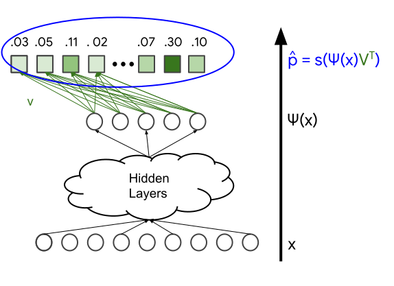
- By incorporating hidden layers and non-linear activation functions like ReLU, the model can capture more intricate relationships within the data. However, as the number of parameters increases, the model can become more challenging to train and more resource-intensive to deploy.
Two-tower Model
- Many online platforms, like YouTube, Facebook, and TikTok, use the two-tower model in their recommender systems.
- This process is as follows:
- The two-tower model consists of two sub-neural networks: query and item.
- The query tower encodes user data; the item tower encodes product data.
- The output of each tower is an embedding, i.e., a dense vector.
- The similarity of a user and product pair is measured using the dot product.
- The trained embeddings of query and item towers are stored for fast retrieval.
- The following diagram (source) visually illustrates the two-tower architecture.
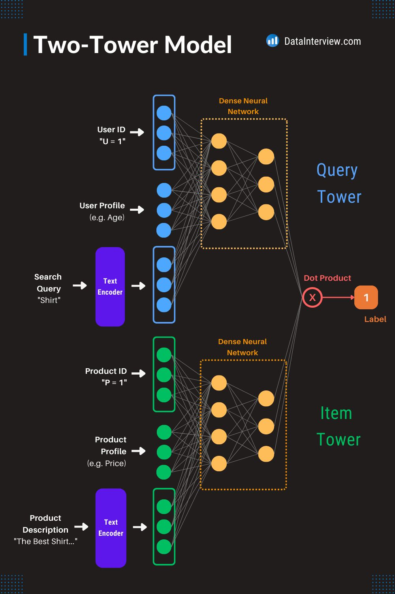
Candidate Retrieval
- Now that you have an embedding model, how would you decide which items to recommend given a user?
- At serve time, given a query, you start by doing one of the following:
- For a matrix factorization model, the query (or user) embedding is known statically, and the system can simply look it up from the user embedding matrix.
- For a DNN model, the system computes the query embedding \(\psi(x)\) at serve time by running the network on the feature vector \(x\).
- Once you have the query embedding \(q\), search for item embeddings \(V_{j}\) that are close to \(q\) in the embedding space. This is a nearest neighbor problem. Practically, approximate nearest neighbor algorithms are used to tackle this aspect. For example, you can return the top \(\mathrm{k}\) items according to the similarity score \(s\left(q, V_{j}\right)\).” (source)
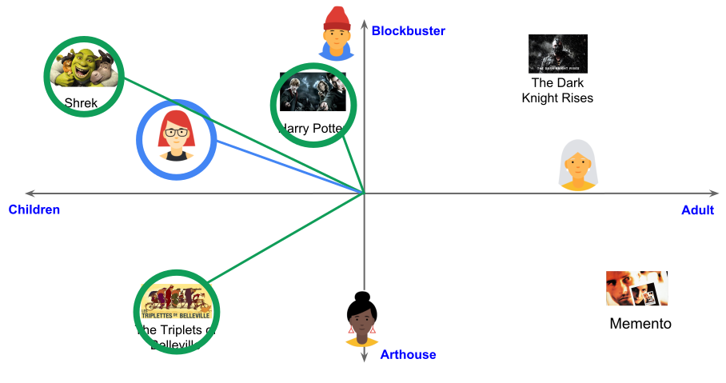
- “You can use a similar approach in related-item recommendations. For example, when the user is watching a YouTube video, the system can first look up the embedding of that item, and then look for embeddings of other items that are close in the embedding space.” (source)
Large-scale Retrieval
- “To compute the nearest neighbors in the embedding space, the system can exhaustively score every potential candidate. Exhaustive scoring can be expensive for very large corpora, but you can use either of the following strategies to make it more efficient:
- If the query embedding is known statically, the system can perform exhaustive scoring offline, precomputing and storing a list of the top candidates for each query. This is a common practice for related-item recommendation.
- Use approximate nearest neighbors.” (source)
Use Cases
- Twitter: Twitter uses candidate generation to recommend accounts for users to follow. The recommendation engine generates a list of accounts that the user might be interested in based on their activity on the platform. Twitter’s algorithm considers factors such as the user’s tweets, retweets, likes, and interactions with other accounts to generate a list of recommended accounts. In addition to recommending accounts, Twitter also generates candidate tweets for users to engage with. The system analyzes the user’s activity and suggests tweets that they may be interested in liking or retweeting.
- Pinterest: Pinterest uses candidate generation to recommend pins to users based on their interests. The recommendation engine analyzes the user’s activity on the platform, such as the pins they have saved, liked, and commented on, to generate a list of recommended pins. Pinterest also generates candidate boards for users to follow. The system identifies boards that are related to the user’s interests and suggests them as potential candidates for follow.
- Netflix: Netflix uses candidate generation to recommend TV shows and movies to users. The recommendation engine analyzes the user’s viewing history and behavior on the platform to generate a list of recommended titles. Netflix’s algorithm considers factors such as the user’s watch history, search queries, and interactions with the platform to generate a personalized list of recommended titles. The platform also generates candidate trailers for users to watch. The system analyzes the user’s viewing history and suggests trailers for titles that the user might be interested in.
- Amazon: Amazon uses candidate generation to recommend products to users based on their browsing and purchasing history. The recommendation engine analyzes the user’s activity on the platform, such as the items they have searched for, added to their cart, and purchased, to generate a list of recommended products. Amazon’s algorithm considers factors such as the user’s search history, purchase history, and interactions with the platform to generate a personalized list of recommended products. The platform also generates candidate reviews for users to read. The system analyzes the user’s browsing history and suggests reviews for products that the user might be interested in.
YouTube
- The image below (source) shows the candidate generation architecture.
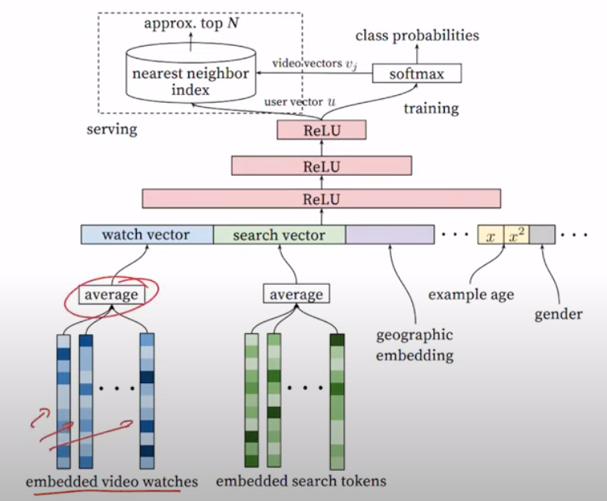
- At a high level, they use a multi-class classification neural network model that is a non-linear matrix factorization model based on user watch history data.
- Here, they count a fully watched video as a positive example and negative examples are randomly sampled but they made sure these dont contain positive examples as well.
- ANN with similarity measures are used at inference time based on user and video embeddings to get the top 100 or so candidates.
- Now let’s go back to the architecture from the image above. Embedded vid’eos are created for each user and a weighted average is taken for different categories such as search (since the user could search something and not watch it), watch (shows a positive example), and geolocation.
- During training, it leverages softmax to predict class probabilities but during serving it uses ANN.
- This then goes through a feed forward neural network that uses a ReLU activation.
Negative Sampling
- Negative sampling and the addition of items that a user won’t like are typically applied during the training phase of recommender systems. The purpose of these techniques is to address bias in the training data and improve the performance and fairness of the models.
- During training, negative sampling involves randomly selecting items that the user has not interacted with and assigning them negative labels to represent disinterest or lack of preference. This helps balance the dataset and provides a more representative view of user preferences. By including negative samples, the model can learn to distinguish between items that a user is likely to prefer and those they are likely to dislike.
- Negative samples are used to help the model learn patterns and make better predictions, but they are not meant to be used as actual recommendations to users.
- During the serving phase, the recommender system utilizes the trained model to generate personalized recommendations based on user preferences and other relevant factors. The goal is to provide recommendations that are aligned with the user’s interests and preferences, rather than deliberately suggesting items that the user won’t like.
- The aim of using negative sampling and introducing negative examples during training is to improve the overall performance and fairness of the recommender system. By considering both positive and negative examples during the training phase, the model can better capture the nuanced preferences of users and avoid biases that may arise from the limited availability of positive data.
-
It’s worth mentioning that the exact techniques and approaches for mitigating bias may vary depending on the specific recommender system and the characteristics of the data. The ultimate objective is to strike a balance between addressing biases and providing accurate and relevant recommendations to users.
- “To illustrate this, consider a simple example where we have a user and three posts (0, 1, 2) on a platform. Posts 1 and 2 were shown to the user, and they engaged with post 1 but not post 2. An oracle reveals that post 2 is slightly more relevant to the user than post 0. Each post has a 1D embedding, where the embedding value corresponds to the post ID. Without negative sampling, training the user embedding using gradient descent would likely result in the user embedding being closer to post 0 than post 2.” (source)
Evaluation
- To test if a recommender system has a good candidate generation or candidate retrieval pool, you can use various evaluation metrics that measure the quality of the recommended items. Evaluation Metrics and Loss Functions for Recommender Systems offers a detailed discourse on metrics for discovery (i.e., search and recommendation) systems.
- Some commonly used metrics are:
- Precision: Precision measures the percentage of relevant items among the recommended items. In the context of candidate generation, precision measures how many of the recommended candidates are actually relevant to the user’s preferences.
- Recall: Recall measures the percentage of relevant items that were recommended. In the context of candidate generation, recall measures how many of the relevant candidates were recommended to the user.
- F1 Score: F1 Score is the harmonic mean of precision and recall. It provides a balance between precision and recall and is a good overall metric for evaluating candidate generation performance.
- Mean Average Precision (mAP): MAP measures the average precision across different queries. In the context of candidate generation, MAP measures the average precision of the recommended candidates across all the users.
- Normalized Discounted Cumulative Gain (NDCG): NDCG measures the relevance of the recommended items by assigning higher scores to items that are more relevant. In the context of candidate generation, NDCG measures how well the recommended candidates are ranked according to their relevance.
- By evaluating these metrics, you can assess the quality of the recommended items and identify areas where the candidate generation or retrieval pool needs improvement.
FAQs
In the context of recommender systems, in which scenarios does delayed feedback occur?
- In the context of recommender systems, delayed feedback refers to scenarios where the feedback or reward signal (such as clicks, ratings, or purchases) from users does not immediately follow a recommendation. This delay complicates the learning and evaluation of the recommendation algorithm, as the system has to wait for user responses before it can accurately update its models. Delayed feedback can occur in several scenarios:
Purchase-Based Recommendations (E-commerce)
-
In e-commerce platforms, users may not immediately purchase an item after it is recommended. It could take hours, days, or even weeks for a user to decide to buy a product. During this delay, the recommender system does not have immediate feedback on whether the recommendation was effective or not.
-
Example: A user browses an online store and receives a recommendation for a camera. They might research the camera, compare prices elsewhere, or simply wait for a promotion before making a purchase. The recommender system only receives feedback once the purchase is made, which could be significantly delayed.
Content Consumption (Streaming Platforms)
-
On platforms that recommend content such as videos, music, or articles, delayed feedback can occur when users save items for later consumption. The user might see a recommendation and add it to a “watchlist” or “favorites” queue but won’t interact with the content until much later.
-
Example: A streaming service like Netflix recommends a TV show to a user, and they add it to their watchlist. The system will not receive feedback on the user’s interest until they actually start watching the show, which could happen days or weeks later.
Rating and Review Systems
-
Some platforms rely on explicit feedback like user ratings or reviews. However, users often delay providing this feedback, or they may never provide it at all. Even after a user interacts with an item (e.g., watching a movie or purchasing a product), they might wait to rate or review the item, leaving the system in a state of uncertainty.
-
Example: A user might watch a movie on a streaming platform but not rate it until later, or never rate it at all. The recommendation system will have to wait for this feedback to assess the effectiveness of the recommendation.
Click-Through Delays (Online Advertising)
-
In online advertising, delayed feedback can occur when users see an ad but do not click on it immediately. They might revisit the ad later or search for the product through other channels before making a decision. This can make it difficult to attribute the eventual user action (such as a purchase) to the initial recommendation or advertisement.
-
Example: A user sees a product ad on a website, but instead of clicking it right away, they later search for the product independently and make a purchase. The recommendation system or ad platform might not receive immediate feedback from the initial interaction, causing a delay in evaluating the ad’s effectiveness.
Complex Decision-Making (Travel and Real Estate)
-
In industries like travel, real estate, or high-value purchases (e.g., cars), users take time to make decisions. They may explore multiple options, compare prices, or wait for the right moment before committing. The feedback loop between recommendation and action is often extended due to the complex nature of decision-making.
-
Example: A travel platform recommends a flight or vacation package. The user might take days or weeks to book the trip after evaluating different destinations, considering budget constraints, or coordinating with others. The system doesn’t know if its recommendation influenced the booking until much later.
Subscription-Based Services
-
In subscription services (such as SaaS products or media subscriptions), users may interact with a free trial or introductory offer first, but the actual feedback on whether the recommendation was effective might not come until they decide to continue with a paid subscription. This can cause delays in understanding the user’s true engagement and satisfaction.
-
Example: A user subscribes to a free trial of a software service based on a recommendation. The system won’t know if the user is truly interested until the trial period ends and they decide whether or not to subscribe to the paid service.
Event-Driven Recommendations
-
In cases where recommendations are based on upcoming events (such as concerts, sports events, or conferences), feedback is delayed until the event actually occurs. The user may express interest in attending (e.g., bookmarking or adding the event to their calendar), but the final action (e.g., purchasing tickets or attending) could be delayed until closer to the event date.
-
Example: A music platform recommends a concert that takes place in a few months. The user may express interest by adding it to their calendar but only purchase tickets shortly before the event. The system has to wait until then to know if the recommendation was successful.
Delayed Behavioral Signals in Long-Term Engagement
-
In certain scenarios, the user’s immediate reaction to a recommendation may not fully reflect the long-term impact of that recommendation. For instance, a user might engage with a content recommendation, but the system might not receive feedback on how much the user truly enjoyed the content or if it led to long-term engagement until further interactions or behaviors are observed over time.
-
Example: A book recommendation might lead a user to purchase and read the book, but the system might not get immediate feedback on whether the user enjoyed it or whether it will influence future reading habits until they rate the book or show interest in related titles.
User Conversion Funnels
-
In many cases, recommendations are part of a larger conversion funnel where the final action, such as a purchase or subscription, happens at the end of a series of interactions. The feedback on a recommendation’s effectiveness can be delayed if the user interacts with several stages of the funnel before making a decision.
-
Example: A user receives a recommendation for a SaaS product and signs up for a trial. They then go through multiple steps of the onboarding process and use the product for a few weeks before deciding whether to purchase a full subscription. The recommendation’s success or failure is only clear after the entire funnel is completed.
Conclusion
- Delayed feedback in recommender systems can occur in various scenarios where users take time to interact with, evaluate, or act on recommendations. Whether due to complex decision-making processes, long feedback loops in consumption, or user behaviors like bookmarking and saving items for later, delayed feedback poses a challenge for recommender systems in terms of real-time learning and model evaluation.
What is the network effect in recommender systems?
- The network effect in recommender systems refers to the phenomenon where the value or effectiveness of the system increases as more users interact with it. In simpler terms, the more people use the system, the better the recommendations become for everyone. This effect can manifest in several ways, and it often leads to a self-reinforcing cycle of growth and improvement.
- Here are some key aspects of the network effect in recommender systems:
Data Enrichment
- More Users, More Data: As more users interact with the recommender system (e.g., by rating, clicking, purchasing items), the system collects more interaction data. This additional data helps the system understand user preferences better, leading to more accurate and personalized recommendations for both new and existing users.
- Collaborative Filtering: In collaborative filtering-based recommender systems, the behavior of one user can directly influence recommendations for others. As more users participate, the system can identify patterns and correlations between users and items more effectively, improving the quality of the recommendations for the entire user base.
Improved Item Discovery
- Emerging Trends: When a large number of users engage with a particular item (such as a movie, product, or song), the system can detect trends and recommend popular or emerging items to others. This collective behavior can amplify the discovery of niche or long-tail content that may have otherwise gone unnoticed.
- Social Influence: Recommendations become more valuable as the system taps into the preferences of a larger community. Users might be influenced by what others are enjoying, leading to a viral spread of certain content or products through the recommendation engine.
Feedback Loops
- Positive Feedback Loop: A key outcome of the network effect is the creation of positive feedback loops. As users interact with the system, the system improves, which leads to better recommendations, which in turn attracts more users who engage more with the system, and the cycle continues. This virtuous cycle is a core driver of the success of large-scale recommendation platforms (e.g., Netflix, Amazon, Spotify).
- Content Providers: In platforms where content providers (such as sellers or creators) are involved, the network effect can also attract more providers to the platform. They are drawn by the large user base and the effective recommendation system, further enriching the content or product pool, which enhances user engagement.
Cold Start Problem Mitigation
- New User/Item Integration: The network effect helps mitigate the “cold start” problem, where the system has little to no data about new users or items. As more users interact with the system, it can leverage similar users’ data or similar items’ interactions to make reasonably accurate recommendations, even for users or items with limited direct interaction data.
Platform Growth and Dominance
- Market Dominance: The network effect can give large platforms a competitive advantage because their recommendations become increasingly superior as they gain more users and data. This can create barriers to entry for new competitors who lack the scale of data to produce equally effective recommendations.
- Lock-In Effect: The improved recommendations that arise from network effects may lead to a “lock-in” effect, where users are less likely to leave the platform because the personalization and user experience they receive are difficult to replicate elsewhere.
Examples of Network Effect in Recommender Systems
- Netflix: As Netflix’s user base grows and more people watch, rate, and interact with content, its recommendation algorithms have more data to work with. This leads to better recommendations for everyone, driving more viewership and engagement, which in turn improves the algorithm further.
- Amazon: On Amazon, user purchases, reviews, and browsing behaviors help refine product recommendations for all users. The more users participate, the better Amazon’s recommendations become, leading to higher customer satisfaction and increased sales.
Challenges of Network Effects in Recommender Systems
- While network effects offer significant benefits, they can also create challenges:
- Popularity Bias: The network effect can sometimes result in a “rich-get-richer” scenario where popular items are recommended more frequently, making it harder for lesser-known or niche items to be discovered.
- Echo Chambers: When recommendations are based heavily on collective behavior, users might be repeatedly exposed to the same types of content, reinforcing existing preferences and reducing exposure to diverse or novel content.
Conclusion
- The network effect in recommender systems enhances their effectiveness as more users engage with the system, leading to richer data, better personalization, and stronger user retention. It drives platform growth and can create competitive advantages, but it also requires careful management to avoid biases and maintain diversity in recommendations.
In recommender systems, do ranking models process items in batches or individually?
- In recommender systems, ranking models generally process items in batches, rather than individually, for several reasons related to performance and efficiency. Here’s why:
Efficiency of Computation
- Parallelization: Processing items in batches allows for better utilization of hardware resources, such as GPUs or CPUs, which are optimized for parallel processing. By grouping items together, computations (e.g., feature extraction, model inference) can be parallelized, reducing the overall time required to rank multiple items.
- Batching Optimizations: Machine learning libraries and inference frameworks (e.g., TensorFlow, PyTorch, Scikit-learn) often have optimizations that make batch processing faster than processing one item at a time. For instance, matrix operations are more efficient when performed on a batch of items.
Latency Considerations
- Reduced Latency Per Item: When items are processed in batches, the latency per item decreases because the ranking model can apply its operations to a set of items simultaneously, rather than handling each one in isolation. This reduces the cumulative time for processing a group of items.
- Request Batching: In high-traffic systems, multiple user requests can be combined into batches for processing. This ensures that even with a high load, the system can scale by utilizing the same computational resources more effectively.
Inference Efficiency
- Neural Networks and Trees: Modern ranking models, especially those involving neural networks, are designed to handle batches of data efficiently. For instance, in neural network-based ranking models, performing forward passes through the network on a batch of items is significantly faster than running individual forward passes for each item separately.
- Gradient Boosting: Even with gradient boosting decision trees or other traditional models, performing predictions in batches often improves performance due to efficient memory access patterns and shared computational paths.
Vectorization
- Matrix Operations: Most ranking algorithms, especially in machine learning-based systems, rely heavily on vectorized operations (e.g., matrix multiplications). These operations are much more efficient when dealing with batches of items rather than single items because they allow the system to exploit modern hardware’s SIMD (Single Instruction, Multiple Data) capabilities.
Pipeline Efficiency
- Reduced Overhead: Batching reduces the overhead associated with processing each item individually, such as repeated data transfers, redundant computations, and multiple network or database requests. With batching, the system can fetch data, compute features, and apply ranking models more efficiently in fewer steps.
Handling Real-Time Systems
- Dynamic Batching: In real-time recommendation systems, it’s common to have dynamic batching mechanisms. For example, if a system receives multiple requests in a short time span, it can group them together into a batch before sending them through the ranking model. This helps balance latency and throughput in real-time systems.
Example Scenario: Two-Stage Recommender Systems
- In a typical two-stage recommender system:
- Candidate Generation: The system first generates a large set of candidate items. This is usually done in a computationally cheap manner (e.g., collaborative filtering or approximate nearest neighbors).
- Ranking: These candidate items are then passed to a ranking model, which processes them in batches. The ranking model computes scores for each item based on features such as user-item interactions, content features, and contextual information. Batching ensures that this computation is done efficiently for multiple items at once.
Conclusion
- Ranking models in recommender systems usually process items in batches, leveraging the computational efficiencies of modern hardware and machine learning frameworks. This batch processing helps optimize latency, reduce overhead, and make better use of parallelization and vectorized operations, which is essential for scaling to large numbers of users and items.
What are some ways to improve latency in recommender systems?
- Improving latency in recommender systems is essential for delivering timely and efficient user experiences, particularly when real-time or near-real-time recommendations are required. Here are several techniques to reduce latency in recommender systems:
Model Optimization
- Model Simplification: Simplify models without significantly reducing their performance. For example, use matrix factorization or collaborative filtering instead of more computationally expensive deep learning models when the problem permits.
- Distillation: Use model distillation to train smaller, faster models to replicate the behavior of larger, more complex models. This is particularly useful in deep learning-based recommender systems.
- Pruning and Quantization: Reduce the size and complexity of models through techniques such as pruning (removing redundant parameters) and quantization (using lower precision data types like int8 instead of float32).
Caching
- Pre-compute Recommendations: Cache frequently requested or popular recommendations ahead of time. This allows for quick retrieval of recommendations for common queries or user profiles.
- Intermediate Result Caching: Cache intermediate results or partial computations during recommendation generation, especially when parts of the computation are reused across multiple queries.
- Edge Caching: For geographically distributed systems, cache recommendations closer to the user, at the edge of the network, to reduce latency caused by long-distance data transfers.
Efficient Retrieval Techniques
- Approximate Nearest Neighbor (ANN): Use ANN algorithms like FAISS, ScaNN, or Annoy to reduce the computational burden of retrieving the most similar items or users from large datasets. These methods approximate the exact nearest neighbors but with significantly lower latency.
- Indexing and Clustering: Precompute and index user and item embeddings in such a way that similar items are grouped or clustered, which speeds up the retrieval process.
Asynchronous Processing
- Asynchronous Updates: Rather than updating recommendations synchronously (in real-time), update them asynchronously. For example, periodic batch processing can be used for updates rather than recalculating recommendations with every user action.
- Decoupling Front-end and Back-end: Implement asynchronous data fetching where the front-end doesn’t block while waiting for recommendations. Placeholder content can be displayed until the recommendations are ready.
Data Structure Optimization
- Optimized Data Stores: Choose databases or data stores that are optimized for recommendation use cases, such as key-value stores, columnar databases (e.g., Cassandra), or in-memory databases like Redis. They allow for faster data retrieval, especially when coupled with indexing.
- Memory Optimization: Keep frequently accessed data in memory (using systems like Redis, Memcached, or custom in-memory stores) to avoid the overhead of disk I/O.
Parallelization and Distribution
- Parallel Computing: Parallelize the computation of recommendations across multiple CPUs or GPUs. For instance, split the data into smaller chunks and compute recommendations for each chunk in parallel.
- Distributed Systems: Leverage distributed systems like Apache Spark or TensorFlow to scale recommendation computation across multiple nodes in a cluster. Distributed systems are especially helpful when handling large datasets and complex models.
Model Serving Optimization
- Model Compilation: Use model compilers like TensorRT or ONNX Runtime to optimize model execution on specific hardware (e.g., GPUs or specialized hardware like TPUs), which can significantly reduce latency.
- Batched Inference: Process multiple recommendations requests in a single batch when possible. This can make better use of the hardware and reduce per-request overhead.
- Model Partitioning: Break down large models into smaller parts that can be served independently. This reduces the amount of computation needed for any single request.
Streaming and Online Learning
- Stream Processing: Instead of relying on batch processing, use stream processing frameworks like Apache Flink, Kafka Streams, or Spark Streaming to process data and generate recommendations in real-time as user actions happen.
- Online Learning: Implement online learning algorithms that can update the model incrementally as new data arrives. This avoids recomputing recommendations from scratch and reduces latency.
Personalization Strategies
- Cold Start Strategies: Optimize for latency in cold start situations by providing recommendations based on metadata or general popularity trends, which can be calculated ahead of time.
- Two-Stage Recommender Systems: Use a lightweight, first-stage recommender to quickly narrow down candidate items (e.g., using collaborative filtering or popularity-based approaches), and then apply a more complex, second-stage model (e.g., neural networks) only on the filtered items. This reduces the computation cost of running complex models on the entire dataset.
Hardware Acceleration
- Specialized Hardware: Use specialized hardware for inference, such as GPUs, TPUs, or even dedicated recommendation accelerators (e.g., NVIDIA A100s). These can process large amounts of data more efficiently than traditional CPUs.
-
Edge Devices: For certain applications, pushing some of the recommendation computation to the edge (closer to the user, such as on a user’s device) can reduce network latency.
- By combining multiple strategies from the list above, recommender systems can achieve significant reductions in latency while maintaining or even improving recommendation quality. The appropriate combination depends on the specific architecture, data volume, and user requirements of the system.
Serving Optimizations
- When serving these models, further optimizations can be applied, as indicated below:
- Both physical transformations (like model pruning and quantization) and logical transformations (such as splitting the model or separating out embedding tables).
- Logical transformations are particularly focused on optimizing the model’s execution, storage, and latency concerning the available hardware for serving. For instance, embedding tables might be hosted on CPU machines equipped with large memory and IO bandwidth, while the processing of dense features and their interaction with sparse features can be allocated to GPUs, benefiting from parallel processing speedups. The chosen serving paradigm is essentially a deployment plan tailored to the hardware setup, often seen in enterprise environments.
- A common paradigm in recommender systems involves using GPU for dense networks and high CPU memory machines for embedding tables.
Further Reading
- Recommended articles from Eugene Yan’s blog:
- System Design for Recommendations and Search
- Real-time Machine Learning For Recommendations
- Serendipity: Accuracy’s Unpopular Best Friend in Recommenders
- Building a Strong Baseline Recommender in PyTorch, on a Laptop
- Beating the Baseline Recommender with Graph & NLP in PyTorch
- Bandits for Recommender Systems
- Patterns for Personalization in Recommendations and Search
- Search: Query Matching via Lexical, Graph, and Embedding Methods
References
- Google’s Recommendation Systems Developer Course
- Coursera: Music Recommender System Project
- Coursera: DeepLearning.AI’s specialization.
- Recommender system from learned embeddings
- Google’s Recommendation Systems Developer Crash Course: Embeddings Video Lecture
- ALS introduction by Sophie Wats
- Matrix Factorization
- Recommendation System for E-commerce using Alternating Least Squares (ALS) on Apache Spark
- Eugene Yan’s System Design for Recommendations and Search
- NVIDIA’s Recommender Systems, Not Just Recommender Models
- Xavier Amatriain’s Blueprints for RecSys Architectures